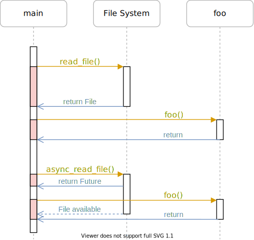
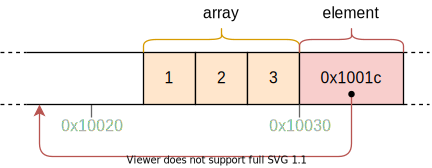

Async/Await
この記事は翻訳されたものです： この記事はAsync/Awaitをコミュニティの手により翻訳したものです。そのため、翻訳が完全・最新でなかったり、原文にない誤りを含んでいる可能性があります。問題があればこのissue上で報告してください！
翻訳者： @kahirokunn, @garasubo, @sozysozbot 及び @woodyZootopia. With contributions from @asami-kawasaki 及び @Foo-x.
この記事では、Rustの協調的マルチタスクとasync/await機能について説明します。Rustのasync/await機能については、Future trait の設計、ステートマシンの変換、 pinning などを含めて詳しく説明します。そして、非同期キーボードタスクと基本的なexecutorを作成することで、カーネルにasync/awaitの基本的なサポートを追加します。
このブログの内容は GitHub 上で公開・開発されています。何か問題や質問などがあれば issue をたててください (訳注: リンクは原文(英語)のものになります)。またこちらにコメントを残すこともできます。この記事の完全なソースコードはpost-12 ブランチにあります。
目次
🔗マルチタスク
ほとんどのOSの基本機能のひとつに、複数のタスクを同時に実行できるマルチタスクというものがあります。例えば、この記事をご覧になっている間も、テキストエディタやターミナルウィンドウなど、他のプログラムを開いていることでしょう。また、ブラウザのウィンドウを1つだけ開いていたとしても、デスクトップのウィンドウを管理したり、アップデートをチェックしたり、ファイルのインデックスを作成したりと、さまざまなバックグラウンドタスクがあるはずです。
一見、すべてのタスクが並行して実行されているように見えますが、1つのCPUコアで同時に実行できるのは1つのタスクだけです。タスクが並列に実行されているように見せるために、OSは実行中のタスクを素早く切り替えて、それぞれのタスクが少しずつ進むようにしています。コンピュータは高速なので、ほとんどの場合、私達がこの切り替えに気づくことはありません。
シングルコアのCPUは一度に1つのタスクしか実行できませんが、マルチコアのCPUは複数のタスクを真の意味で並列に実行することができます。例えば、8コアのCPUであれば、8つのタスクを同時に実行することができます。マルチコアCPUの設定方法については、今後の記事でご紹介します。この記事では、わかりやすくするために、シングルコアのCPUに焦点を当てます。（なお、マルチコアCPUには、最初は1つのアクティブコアしかないので、ここではシングルコアCPUとして扱っても問題はありません）。
マルチタスクには2つの形態があります。協調的マルチタスクでは、タスクが定期的にCPUの制御を放棄することで、他のタスクの処理を進めます。非協調的マルチタスクは、OSの機能を利用して、任意の時点でスレッドを強制的に一時停止させて切り替えるものです。以下では、この2つのマルチタスクについて、それぞれの長所と短所を説明します。
🔗非協調的マルチタスク
非協調的マルチタスクの考え方は、タスクを切り替えるタイミングをOSが制御するというものです。そのためには、割り込みのたびにCPUの制御権がOS側に戻ってくることを利用します。これにより、システムに新しい入力があったときに、タスクを切り替えることができます。例えば、マウスを動かしたときやネットワークパケットが届いたときなどにタスクを切り替えることができます。OSは、ハードウェアのタイマーを設定して、その時間が経過したら割り込みを送るようにすることで、タスクの実行が許される正確な時間を決定することもできます。
ハードウェア割り込みでのタスク切り替え処理を下図に示します:

最初の行では、CPUがプログラムAのタスクA1を実行しています。他のすべてのタスクは一時停止しています。2行目では、CPUにハードウェア割り込みが入ります。ハードウェア割り込み（訳注: 翻訳当時、リンク先未訳）の記事で説明したように、CPUは直ちにタスクA1の実行を停止し、割り込み記述子テーブル(IDT)に定義されている割り込みハンドラにジャンプします。この割り込みハンドラを介して、OSは再びCPUを制御できるようになり、タスクA1の継続ではなく、タスクB1に切り替えることができます。
🔗状態の保存
タスクは任意の時点で中断されるため、計算の途中である可能性もあります。後で再開できるようにするために、OSは、タスクのコールスタックやすべてのCPUレジスタの値など、タスクの状態全体をバックアップする必要があります。この作業をコンテキスト・スイッチ (context switch) といいます。
コールスタックは非常に大きくなる可能性があるため、OSは通常、各タスクのスイッチでコールスタックの内容をバックアップする代わりに、各タスクに個別のコールスタックを設定します。このような独立したスタックを持つタスクは、thread of executionと呼ばれます。タスクごとに独立したスタックを使用することで、コンテキスト・スイッチの際に保存する必要があるのはレジスタの内容だけになります(プログラム・カウンタとスタック・ポインタを含む)。この方法を取ることで、コンテキスト・スイッチの性能上のオーバーヘッドが最小限になります。これは、コンテキスト・スイッチが1秒間に100回も行われることがあるため、非常に重要なことです。
🔗議論
非協調的マルチタスクの主な利点は、OSがタスクの許容実行時間を完全に制御できることです。これにより、各タスクが協力しなくても、CPU時間を公平に確保できることが保証されます。これは、サードパーティのタスクを実行する場合や、複数のユーザーがシステムを共有する場合に特に重要です。
非協調的マルチタスクの欠点は、各タスクが独自のスタックを必要とすることです。共有スタックと比べると、タスクごとのメモリ使用量が多くなり、システム内のタスク数が制限されることが多くなります。また、タスクがレジスタのごく一部しか使用していない場合でも、タスクが切り替わるたびにOSは常にCPUレジスタの状態を完全に保存しなければならないというデメリットもあります。
非協調的マルチタスクとスレッドは、信頼されていないユーザースペース・プログラムの実行を可能にする、OSの基本的な構成要素です。これらの概念については、今後の記事で詳しく説明します。しかし今回は、カーネルにも有用な機能を提供する協調的マルチタスクに焦点を当てます。
🔗協調的マルチタスク
協調的マルチタスクでは、実行中のタスクを任意のタイミングで強制的に停止させるのではなく、各タスクが自発的にCPUの制御を放棄するまで実行させます。これにより、例えば、I/O操作を待つ必要がある場合など、都合の良いタイミングでタスクは一時停止することができます。
協調的マルチタスクは、言語レベルで使われることが多いです。具体的には、コルーチンやasync/awaitなどの形で登場します。これは、プログラマやコンパイラがプログラムにyield操作を挿入することで、CPUの制御を放棄し、他のタスクを実行させるというものです。例えば、複雑なループの各反復の後に yield を挿入することができます。
協調的マルチタスクは非同期I/Oと組み合わせるのが一般的です。非同期I/O では、操作が終了するまで待って、その間に他のタスクが実行できないようにする代わりに、操作がまだ終了していない場合は“not ready“というステータスを返します。この場合、待機中のタスクは yieldを実行して他のタスクを実行させることができます。
🔗状態の保存
タスクは自分で一時停止のポイントを決めるので、OSがタスクの状態を保存しなくてよくなります。その代わり、自分が停止する直前に継続するのに必要になる状態だけを保存することができ、その結果、パフォーマンスが向上することが多いです。例えば、複雑な計算を終えたばかりのタスクは、中間結果を必要としないため、計算の最終結果をバックアップするだけで済むかもしれません。
言語でサポートされている協調タスクの実装では、一時停止する前にコールスタックの必要な部分をバックアップすることもできることが多いです。例えば、Rustのasync/awaitの実装では、まだ必要なすべてのローカル変数を、自動的に生成された構造体に格納しています（後述）。一時停止の前にコールスタックの関連部分をバックアップすることで、すべてのタスクが単一のコールスタックを共有することができ、タスクごとのメモリ消費量が大幅に少なくなります。これにより、メモリ不足に陥ることなく、ほぼ任意の数の協調タスクを作成することができます。
🔗議論
協調的マルチタスクの欠点は、非協力的なタスクが無制限の時間実行できる可能性があることです。そのため、悪意のあるタスクやバグのあるタスクが他のタスクの実行を妨げ、システム全体の速度を低下させたり、ブロックしたりすることがあります。このような理由から、協調的マルチタスクは、すべてのタスクが協調することがわかっている場合にのみ使用する必要があります。反例として、任意のユーザーレベルプログラムの協調にOSを依存させるのはよくありません。
しかし、協調的マルチタスクは、パフォーマンスやメモリの面で非常に優れているため、非同期処理と組み合わせて、 プログラムの中で 使用するのには適した手法です。OSのカーネルは、非同期のハードウェアとやりとりする、パフォーマンスが非常に重要なプログラムであるため、協調的マルチタスクは同時実行の実装に適したアプローチであると言えます。
🔗RustのAsync/Await
Rust言語は、async/awaitという形で協調的マルチタスクのファーストクラス（訳注：第一級オブジェクトの意）のサポートを提供しています。async/awaitとは何か、どのように機能するのかを探る前に、Rustで future と非同期プログラミングがどのように機能するのかを理解する必要があります。
🔗Future
future は、まだ利用できない可能性のある値を表します。例えば、他のタスクで計算された整数や、ネットワークからダウンロードされたファイルなどが考えられます。futureは、値が利用可能になるまで待つのではなく、値が必要になるまで実行を続けることを可能にします。
🔗例
future の概念は、小さな例で説明するのが一番です:

このシーケンス図は、ファイルシステムからファイルを読み込み、関数 foo を呼び出す main 関数を示しています。この処理は2回繰り返されます。すなわち、同期的な read_file の呼び出しと、非同期的な async_read_file の呼び出しです。
同期呼び出しの場合、main関数はファイルシステムからファイルが読み込まれるまで待つ必要があります。それが終わって初めて、foo関数を呼び出すことができ、結果を再び待つ必要があります。
非同期の async_read_file 呼び出しでは、ファイルシステムがすぐにfutureを返し、バックグラウンドで非同期にファイルをロードします。これにより、main関数はfooをより早く呼び出すことができ、fooはファイルのロードと並行して実行されます。この例では、ファイルのロードは foo が戻る前に終了しているので、main は foo が戻った後にさらに待つことなく、ファイルをすぐに処理することができます。
🔗RustにおけるFuture
Rustでは、futureはFutureという trait で表され、次のようになります:
pub trait Future {
type Output;
fn poll(self: Pin<&mut Self>, cx: &mut Context) -> Poll<Self::Output>;
}
関連型 Output は非同期値の型を指定します。例えば、上の図の async_read_file 関数は、Output を File に設定した Future インスタンスを返します。
pollメソッドは、その値がすでに利用可能かどうかをチェックすることができます。このメソッドは、以下のような Poll 列挙体を返します。
pub enum Poll<T> {
Ready(T),
Pending,
}
値が既に利用可能な場合(例えば、ファイルがディスクから完全に読み込まれた場合)、その値は Ready variantにラップされて返されます。それ以外の場合は、Pending variantが返され、呼び出し側に値がまだ利用できないことを知らせます。
pollメソッドは2つの引数を取ります。self: Pin<&mut Self>とcx: &mut Contextです。前者は通常の &mut self の参照のように動作しますが、self の値がそのメモリロケーションに ピン留め/固定 （pin) されるという違いがあります。Pinとその必要性を理解するには、まずasync/awaitの仕組みを理解しなければなりません。そのため、それについてはこの記事の後半で説明します。
cx: &mut Contextパラメータの目的は、ファイルシステムのロードなどの非同期タスクにWakerインスタンスを渡すことです。この Waker によって、非同期タスクは自分（またはその一部）が終了したこと、例えばファイルがディスクから読み込まれたことを通知することができます。メインタスクはFutureが準備できたら通知されることを知っているので、pollを何度も何度も呼び出す必要はありません。このプロセスについては、後ほど独自の waker 型を実装する際に詳しく説明します。
🔗Futureとの連携
futureがどのように定義されているか、また、pollメソッドの基本的な考え方を理解しました。しかし、futureを効果的に使う方法はまだわかっていません。問題は、futureが非同期タスクの結果を表していて、それがまだ利用できない可能性があることです。しかし、実際には、これらの値が次の計算のためにすぐに必要になることがよくあります。そこで問題となるのは、どうすれば必要になったときに効率的にfutureの値を取り出すことができるかということです。
🔗Futureを待つ
1つの可能な答えは、futureの準備が整うまで待つことです。これは次のようなものです:
let future = async_read_file("foo.txt");
let file_content = loop {
match future.poll(…) {
Poll::Ready(value) => break value,
Poll::Pending => {}, // 何もしない
}
}
ここでは、pollをループで何度も呼び出すことで、futureを「積極的」に待つようにしています。pollの引数はここでは重要ではないので、省略しています。この解決策はうまくいきはしますが、値が利用可能になるまでCPUを忙しくさせているので、非常に非効率的です。
より効率的なアプローチは、futureが利用可能になるまで現在のスレッドを ブロック することです。もちろん、これはスレッドがある場合にのみ可能なことで、この解決策は、少なくとも現時点では私たちのカーネルでは機能しません。ブロッキングがサポートされているシステムでも、非同期タスクが同期タスクに戻ってしまい、並列タスクの潜在的なパフォーマンスの利点が阻害されてしまうため、ブロッキングは好まれません。
🔗Futureコンビネータ
待機する代わりに、Futureコンビネータを使うこともできます。Futureコンビネータは map のようなメソッドで、Iterator のメソッドと同じように、futureを連鎖させたり組み合わせたりすることができます。これらのコンビネータはfutureを待つのではなくfutureを返し、それによってpollのmap操作を適用します。
例として、Future<Output = String>をFuture<Output = usize>に変換するためのシンプルなstring_lenコンビネータは次のようになります：
struct StringLen<F> {
inner_future: F,
}
impl<F> Future for StringLen<F> where F: Future<Output = String> {
type Output = usize;
fn poll(mut self: Pin<&mut Self>, cx: &mut Context<'_>) -> Poll<T> {
match self.inner_future.poll(cx) {
Poll::Ready(s) => Poll::Ready(s.len()),
Poll::Pending => Poll::Pending,
}
}
}
fn string_len(string: impl Future<Output = String>)
-> impl Future<Output = usize>
{
StringLen {
inner_future: string,
}
}
// 使用例
fn file_len() -> impl Future<Output = usize> {
let file_content_future = async_read_file("foo.txt");
string_len(file_content_future)
}
このコードは、ピン留め（pinning）を扱っていないので、完全には動作しませんが、例としては十分です。基本的なアイデアは、string_len 関数が、与えられた Future インスタンスを、新しい StringLen 構造体にラップするというもので、この構造体も Future を実装しています。ラップされたfutureがポーリングされると、内部のfutureをポーリングします。値がまだ準備できていない場合は、ラップされたfutureからも Poll::Pending が返されます。値の準備ができていれば、Poll::Ready variantから文字列が抽出され、その長さが計算されます。その後、再び Poll::Ready にラップされて返されます。
このstring_len関数を使えば、非同期の文字列を待つことなく、その長さを計算することができます。この関数は再びFutureを返すので、呼び出し側は返された値を直接扱うことはできず、再びコンビネータ関数を使う必要があります。このようにして、呼び出しグラフ全体が非同期になったので、どこかの時点で、例えばmain関数の中で、一度に複数のfutureを効率的に待つことができるようになりました。
コンビネータ関数を手動で書くのは難しいので、ライブラリで提供されることが多いです。Rustの標準ライブラリ自体はまだコンビネータのメソッドを提供していませんが、半公式（かつno_std互換）のfuturesクレートは提供しています。そのFutureExt traitは、mapやthenといった高レベルのコンビネータメソッドを提供しており、これを使って任意のクロージャで結果を操作することができます。
🔗利点
Futureコンビネータの大きな利点は、操作を非同期に保つことができることです。非同期I/Oインターフェイスと組み合わせることで、このアプローチは非常に高いパフォーマンスを実現します。Futureコンビネータは通常のtrait実装付き構造体として実装されているため、コンパイラはこれを非常によく最適化できます。詳細については、Rustのエコシステムにfutureが追加されたことを発表したZero-cost futures in Rustの記事を参照してください。
🔗欠点
Futureコンビネータを使うと、非常に効率的なコードを書くことができますが、型システムやクロージャベースのインターフェイスのため、状況によっては使いにくいことがあります。例えば、次のようなコードを考えてみましょう:
fn example(min_len: usize) -> impl Future<Output = String> {
async_read_file("foo.txt").then(move |content| {
if content.len() < min_len {
Either::Left(async_read_file("bar.txt").map(|s| content + &s))
} else {
Either::Right(future::ready(content))
}
})
}
ここでは、ファイル foo.txt を読み込んでから、then コンビネータを使って、ファイルの内容に基づいて 2 番目の future を連鎖させています。もしコンテンツの長さが与えられた min_len よりも小さければ、別の bar.txt ファイルを読み込んで、map コンビネータを使って content に追加します。それ以外の場合は、foo.txt の内容のみを返します。
min_len のライフタイムエラーが発生するのを防ぐため、then に渡すクロージャには move キーワードを使用する必要があります。Either ラッパーを使う理由は、if と else のブロックは常に同じ型でなければならないからです。ブロックの中で異なるfutureの型を返しているので、ラッパーの型を使って単一の型に統一する必要があります。ready 関数とは、もう既に手元にあるデータを、『一瞬で準備の完了するfuture』へと変換する関数です。Either ラッパーはラップされた値がFutureを実装していることを期待しているので、ここではこの関数が必要です。
ご想像のとおり、大規模なプロジェクトでは非常に複雑なコードになることがあります。特に、借用や異なるライフタイムが関係する場合は複雑になります。このような理由から、Rustにasync/awaitのサポートを追加するために多くの作業が行われ、非同期のコードを圧倒的にシンプルに書くことができるようになりました。
🔗Async/Awaitパターン
async/awaitの背後にある考え方は、プログラマに、見た目は通常の同期コードのように見えるが、コンパイラによって非同期コードに変換されるコードを書かせることです。これは async と await という2つのキーワードに基づいて動作します。キーワード async は、関数のシグネチャの中で使用することができ、同期関数を、futureの値を返す非同期関数に変えることができます:
async fn foo() -> u32 {
0
}
// 上記はコンパイラによって次のように変換されます:
fn foo() -> impl Future<Output = u32> {
future::ready(0)
}
このキーワードだけではそれほど便利ではありません。しかし、async関数の中では、awaitキーワードを使って、futureの値を非同期に取得することができます:
async fn example(min_len: usize) -> String {
let content = async_read_file("foo.txt").await;
if content.len() < min_len {
content + &async_read_file("bar.txt").await
} else {
content
}
}
この関数は、上記のコンビネータ関数を使った example 関数をそのまま翻訳したものです。 .await 演算子を使うことで、クロージャや Either 型を必要とせずに future の値を取得することができます。その結果、まるで通常の同期コードを書いているかのように非同期コードを書くことができます。
🔗ステートマシンへの変換
舞台裏で何をしているかというと、async関数の本体をステートマシン (state machine)に変換し、.awaitを呼び出すたびに異なる状態を表すようにしています。上記の example 関数の場合、コンパイラは以下の4つの状態を持つステートマシンを作成します:

各ステートは、関数の異なる待ち状態を表しています。 “Start” と “End” の状態は、関数の実行開始時と終了時を表しています。 “Waiting on foo.txt” の状態は、関数が最初のasync_read_file の結果を待っていることを表しています。同様に、 “Waiting on bar.txt” 状態は、関数が2つ目のasync_read_fileの結果を待っている待ち状態を表しています。
ステートマシンは、各 poll 呼び出しを可能な状態遷移に変換することで、Future traitを実装しています:

この図では、矢印で状態の切り替えを、ダイヤ形で条件分岐を表現しています。例えば、foo.txtのファイルが準備できていない場合、 “no” と書かれたパスが取られ、 “Waiting on foo.txt” の状態になります。それ以外の場合は、 “yes” のパスが取られます。キャプションのない小さな赤いダイヤは、example関数のif content.len() < 100の分岐を表しています。
最初の poll 呼び出しで関数が開始され、まだ準備ができていないfutureに到達するまで実行されていることがわかります。パス上のすべてのfutureが準備できていれば、関数は “End” 状態まで実行でき、そこで結果を Poll::Ready でラップして返します。そうでなければ、ステートマシンは待機状態になり、Poll::Pendingを返します。次の poll 呼び出し時には、ステートマシンは最後の待ち状態から開始し、最後の操作を再試行します。
🔗状態を保存
最後に待機していた状態から継続できるようにするために、ステートマシンは現在の状態を内部的に追跡する必要があります。さらに、次の poll 呼び出しで実行を継続するために必要なすべての変数を保存する必要があります。ここでコンパイラが威力を発揮します。コンパイラは、どの変数がいつ使われるかを知っているので、必要な変数だけを持つ構造体を自動的に生成することができます。
例として、コンパイラは上記の example 関数に対して以下のような構造体を生成します:
// `example`関数は既に上の方で定義されていましたが、画面をスクロールして探さなくても良いように、ここに再び定義しておきます
async fn example(min_len: usize) -> String {
let content = async_read_file("foo.txt").await;
if content.len() < min_len {
content + &async_read_file("bar.txt").await
} else {
content
}
}
// コンパイラが生成したState構造体です:
struct StartState {
min_len: usize,
}
struct WaitingOnFooTxtState {
min_len: usize,
foo_txt_future: impl Future<Output = String>,
}
struct WaitingOnBarTxtState {
content: String,
bar_txt_future: impl Future<Output = String>,
}
struct EndState {}
“start” と “Waiting on foo.txt” の状態では、min_lenパラメータを保存する必要があります。これは後にcontent.len()と比較する際に必要になるからです。 “Waiting on foo.txt” 状態では、さらにfoo_txt_futureが格納されます。これは、async_read_file呼び出しが返したfutureを表します。このfutureは、ステートマシンが継続する際に再びポーリングされる必要があるため、保存する必要があります。
“Waiting on bar.txt” の状態には、bar.txtの準備ができた後の文字列の連結に必要なcontent変数が含まれています。また、bar.txtがロード中であることを表すbar_txt_futureも格納されています。この構造体には、min_len変数は含まれていません。これは、content.len()の比較の後では、もはや必要ないからです。 “end” の状態では、関数はすでに完了まで実行されているので、変数は格納されません。
これはコンパイラが生成しうるコードの一例に過ぎないことに注意してください。構造体の名前やフィールドのレイアウトは実装においては枝葉末節であり、異なる可能性があります。
🔗完全なステートマシンの型
具体的にコンパイラがどのようなコードを生成するのかは実装依存ですが、example 関数に対してどのようなステートマシンが生成されうるかを想像することは、理解を助けることになります。異なる状態を表し、必要な変数を含む構造体はすでに定義されています。これらの構造体の上にステートマシンを作成します。そのためには、これらの構造体をenum構造体にまとめるという方法があります:
enum ExampleStateMachine {
Start(StartState),
WaitingOnFooTxt(WaitingOnFooTxtState),
WaitingOnBarTxt(WaitingOnBarTxtState),
End(EndState),
}
各状態に対応して個別のenum variantを定義し、対応するstate構造体をフィールドとして各variantに追加しています。状態の遷移を実装するために、コンパイラは example 関数に基づいて Future traitの実装を生成します:
impl Future for ExampleStateMachine {
type Output = String; // `example`の返り値の型
fn poll(self: Pin<&mut Self>, cx: &mut Context) -> Poll<Self::Output> {
loop {
match self { // TODO: ピン留めを処理する
ExampleStateMachine::Start(state) => {…}
ExampleStateMachine::WaitingOnFooTxt(state) => {…}
ExampleStateMachine::WaitingOnBarTxt(state) => {…}
ExampleStateMachine::End(state) => {…}
}
}
}
}
関数 example の戻り値であるため、futureの Output 型は String となります。poll関数を実装するために、loop の中で現在の状態に対するmatch文を使います。これは、可能な限り次の状態に切り替え、継続できないときには明示的に return Poll::Pending を使用するというものです。
簡単のため、ここでは簡略化したコードのみを示し、ピン留め、所有権、寿命などは扱っていません。そのため、このコードと以下のコードは疑似コードとして扱い、直接使用しないでください。もちろん、実際にコンパイラが生成したコードは、おそらく異なる方法ではあるものの、すべてを正しく処理します。
コードの抜粋が長大になるのを防ぐために、各マッチアームのコードを別々に紹介します。まず、Startの状態から始めましょう:
ExampleStateMachine::Start(state) => {
// from body of `example`
let foo_txt_future = async_read_file("foo.txt");
// `.await` operation
let state = WaitingOnFooTxtState {
min_len: state.min_len,
foo_txt_future,
};
*self = ExampleStateMachine::WaitingOnFooTxt(state);
}
関数の冒頭ではステートマシンが Start 状態にあります。このとき、example関数の中身を最初の.awaitまですべて実行します。.awaitの操作を処理するために、selfステートマシンの状態をWaitingOnFooTxtに変更し、WaitingOnFooTxtState構造体の構築を行います。
match self {...}文はloopで実行されるので、実行はWaitingOnFooTxtアームにジャンプします:
ExampleStateMachine::WaitingOnFooTxt(state) => {
match state.foo_txt_future.poll(cx) {
Poll::Pending => return Poll::Pending,
Poll::Ready(content) => {
// from body of `example`
if content.len() < state.min_len {
let bar_txt_future = async_read_file("bar.txt");
// `.await` operation
let state = WaitingOnBarTxtState {
content,
bar_txt_future,
};
*self = ExampleStateMachine::WaitingOnBarTxt(state);
} else {
*self = ExampleStateMachine::End(EndState);
return Poll::Ready(content);
}
}
}
}
このマッチアームでは、まず foo_txt_future の poll 関数を呼び出します。もし準備ができていなければ、ループを抜けて Poll::Pending を返します。この場合、selfはWaitingOnFooTxt状態のままなので、ステートマシンの次のpoll呼び出しは同じマッチアームに入り、foo_txt_futureのポーリングを再試行することになります。
foo_txt_futureの準備ができていたら、その結果をcontent変数に代入して、引き続きexample関数のコードを実行します。content.len()がstate構造体に保存されているmin_lenよりも小さければ、bar.txtファイルが非同期に読み込まれます。.awaitの操作を再び状態の変化に変換し、今回はWaitingOnBarTxtの状態にします。ループ内で match を実行しているので、その後新しい状態のマッチアームにすぐにジャンプし、そこで bar_txt_future がポーリングされます。
elseの分岐に入った場合、それ以上の.await操作は発生しません。関数の最後に到達したため、Poll::Readyでラップされたcontentを返します。また、現在の状態を End に変更します。
WaitingOnBarTxtの状態のコードは以下のようになります:
ExampleStateMachine::WaitingOnBarTxt(state) => {
match state.bar_txt_future.poll(cx) {
Poll::Pending => return Poll::Pending,
Poll::Ready(bar_txt) => {
*self = ExampleStateMachine::End(EndState);
// from body of `example`
return Poll::Ready(state.content + &bar_txt);
}
}
}
WaitingOnFooTxtの状態と同様に、まずbar_txt_futureをポーリングします。まだ保留中 (pending) であれば、ループを抜けて Poll::Pending を返します。そうでなければ、example関数の最後の操作（content変数とfutureからの結果の連結）を行います。ステートマシンを End 状態に更新して、Poll::Ready でラップされた結果を返します。
最後に、End状態のコードは以下のようになります:
ExampleStateMachine::End(_) => {
panic!("poll called after Poll::Ready was returned");
// "Poll::Readyが返された後にpollが呼び出されました"
}
Futureは Poll::Ready を返した後、再びポーリングされるべきではありません。したがって、すでに End の状態にあるときに poll が呼ばれるとパニックするようにしましょう。
コンパイラが生成するステートマシンとその Future traitの実装はこのようになっているかもしれません。実際には、コンパイラは異なる方法でコードを生成しています。 (一応、現在はgeneratorsをベースにした実装になっていますが、これはあくまでも実装の詳細です。)
パズルの最後のピースは、生成された example 関数自体のコードです。関数のヘッダは次のように定義されていたことを思い出してください:
async fn example(min_len: usize) -> String
関数本体はすべてステートマシンによって実装されたので、この関数がするべきことはステートマシンを初期化して返すことだけです。これを行う自動生成コードは次のようになります:
fn example(min_len: usize) -> ExampleStateMachine {
ExampleStateMachine::Start(StartState {
min_len,
})
}
この関数は、async修飾子を持たなくなり、Future traitを実装したExampleStateMachine型を明示的に返すようになりました。予想通り、ステートマシンは Start 状態で構築され、対応するstate構造体は min_len パラメータで初期化されます。
この関数は、ステートマシンの実行を開始しないことに注意してください。これは『最初にポーリングされるまで何もしない』という、Rustにおけるfutureの基本的な設計上の決定を反映したものです。
🔗ピン留め
この記事の中で、すでに何度も「ピン留め」について触れています。今こそ、ピン留めとは何か、なぜピン留めが必要なのかを探る時です。
🔗自己参照構造体
上で説明したように、ステートマシン変換では、各待ち状態のローカル変数を構造体に格納します。私たちの example 関数のような小さな例では、これは簡単で、特に問題にはなりませんでした。しかし、変数が相互に参照し合う場合には、問題が難しくなります。例えば、次の関数を考えてみましょう:
async fn pin_example() -> i32 {
let array = [1, 2, 3];
let element = &array[2];
async_write_file("foo.txt", element.to_string()).await;
*element
}
この関数は、内容が 1, 2, 3 の小さな array を作成します。そして、配列の最後の要素への参照を作成し、それを element 変数に格納します。次に、文字列に変換された数値を非同期的に foo.txt ファイルに書き込みます。最後に、elementで参照していた数値を返します。
この関数は1つの await オペレーションを使用するため、結果として得られるステートマシンには start、end、“waiting on write” の 3 つの状態があります。この関数は引数を取らないので、開始状態 (start) の構造体は空です。先ほどと同じように、end状態の時点で関数は終了しているので、この状態の構造体も空になります。“waiting on write“の状態を表す構造体はもっと面白いです:
struct WaitingOnWriteState {
array: [1, 2, 3],
element: 0x1001c, // 配列の最後の要素のアドレス
}
戻り値には element が必要であり、 array は element によって参照されるので、array と element の両方の変数を格納する必要があります。elementは参照なので、参照されている要素への ポインタ (つまり、メモリ上のアドレス)を格納します。ここでは、メモリアドレスの例として、0x1001c を使用しました。実際には、arrayフィールドの最後の要素のアドレスである必要がありますので、構造体がメモリ内のどこに存在するかに依存します。このような内部ポインタを持つ構造体は、フィールドの1つから自分自身を参照するため、 自己参照構造体と呼ばれます。
🔗自己参照構造体の問題点
自己参照構造体の内部ポインタには根本的な問題があり、それは構造体のメモリレイアウトを見ると明らかになります:

arrayフィールドはアドレス0x10014から始まり、elementフィールドはアドレス0x10020から始まります。最後の配列要素がこのアドレスにあるので、アドレス0x1001cを指しています。この時点では、まだすべてが順調です。しかし、この構造体を別のメモリアドレスに移動させると問題が発生します:

構造体を少し移動して、アドレス 0x10024 から始まるようにしました。これは、構造体を関数の引数として渡したり、別のスタック変数に代入したりしたときに起こります。問題は、最後の array 要素のアドレスが 0x1002c になったにもかかわらず、element フィールドは未だアドレス 0x1001c 番地を指していることです。そのため、ポインタがダングリングし（訳注：無効な場所を指すという意味）、次の poll 呼び出し時に未定義の動作が発生してしまいます。
🔗考えられる解決策
ダングリングポインタ問題を解決するための基本的なアプローチは3つあります:
-
ムーブの際にポインタを更新する: このアイデアは、構造体がメモリ内で移動するたびに内部ポインタを更新し、移動後も有効になるようにするものです。残念ながら、この方法では Rust に大規模な変更を加える必要があり、その結果、パフォーマンスが大幅に低下する可能性があります。その理由は、ある種のランタイムがすべての構造体のフィールドの型を追跡し、移動操作のたびにポインタの更新が必要かどうかをチェックする必要があるからです。
-
自己参照のかわりにオフセットを格納する:: ポインタを更新する必要性を回避するために、コンパイラは自己参照を構造体の先頭からのオフセットとして格納することを試みるという手があります。例えば、上記の
WaitingOnWriteState構造体のelementフィールドは、値が 8 のelement_offsetフィールドという形式で保存することもできるでしょう。これは、参照先の配列要素が構造体の先頭から 8 バイト後に始まるからです。構造体を移動してもオフセットは変わらないので、フィールドの更新は必要ありません。このアプローチの問題点は、コンパイラがすべての自己参照を検出する必要があることです。これは、参照の値がユーザーの入力に依存する可能性があるため、コンパイル時には不可能です。そのため、参照を分析して状態構造体を正しく作成するために、再びランタイムシステムが必要になります。これではランタイムのコストがかかるだけでなく、ある種のコンパイラの最適化もできなくなるため、同じく大きなパフォーマンスの低下を招くことになります。
-
構造体のムーブを禁止する: 上で見たように、ダングリングポインタが発生するのは、構造体をメモリ上でムーブさせたときだけです。自己参照構造体に対するムーブ操作を完全に禁止することで、この問題も回避することができます。この方法の大きな利点は、実行時の追加コストなしに、型システムのレベルで実装できることです。欠点は、自己参照をしているかもしれない構造体の移動操作の問題を解決する負担がプログラマにかかってしまうことです。
ゼロコスト抽象化（抽象化は実行時のコストを増やしてはならないという原則） を提供するというRustの理念から、Rustは3つ目の解決策を選択しました。そのために RFC2349 で提案されたのが pinning (ピン留め) APIです。以下では、このAPIの概要を説明し、async/awaitやfutureでどのように動作するかを説明します。
🔗ヒープ上の値
まず最初に、ヒープ上に確保された値は、ほとんどの場合、すでに固定のメモリアドレスを持っているということに気づきます。これらの値は、allocate の呼び出しで作成され、Box<T>のようなポインタ型で参照されます。ポインタ型を移動することは可能ですが、ポインタが指すヒープ上の値は、再び deallocate 呼び出しで解放されるまで、同じメモリアドレスに留まります。
ヒープ割り当てを利用して、自己参照型の構造体を作成してみましょう:
fn main() {
let mut heap_value = Box::new(SelfReferential {
self_ptr: 0 as *const _,
});
let ptr = &*heap_value as *const SelfReferential;
heap_value.self_ptr = ptr;
println!("heap value at: {:p}", heap_value);
println!("internal reference: {:p}", heap_value.self_ptr);
}
struct SelfReferential {
self_ptr: *const Self,
}
SelfReferential という名前のシンプルな構造体を作成します。この構造体には1つのポインタフィールドが含まれます。まず、この構造体をNULLポインタで初期化し、Box::newを使ってヒープ上に確保します。次に、ヒープに割り当てられた構造体のメモリアドレスを決定し、それを ptr 変数に格納します。最後に、ptr変数をself_ptrフィールドに代入して、構造体を自己参照にします。
このコードをplaygroundで実行すると、ヒープ値のアドレスとその内部ポインタが等しいことがわかります。これは、self_ptrフィールドが有効な自己参照であることを意味します。heap_value 変数は単なるポインタなので、それを移動させても（例えば関数に渡しても）構造体自体のアドレスは変わらないので、ポインタを移動させてもself_ptrは有効なままです。
しかし、この例を破綻させてしまう方法はまだあります。Box<T>からその中身をムーブしたり、その内容を置き換えたりすることができます:
let stack_value = mem::replace(&mut *heap_value, SelfReferential {
self_ptr: 0 as *const _,
});
println!("value at: {:p}", &stack_value);
println!("internal reference: {:p}", stack_value.self_ptr);
ここでは、mem::replace関数を使用して、ヒープに割り当てられた値を新しい構造体のインスタンスで置き換えています。これにより、元の heap_value をスタックに移動させることができますが、構造体の self_ptr フィールドは、古いヒープアドレスを指し示すダングリングポインタになっています。この例をplaygroundで実行してみると、出力された “value at:” と “internal reference:” の行には、たしかに異なるポインタが表示されていることがわかります。つまり、値をヒープに割り当てるだけでは、自己参照を安全にするには不十分なのです。
上記の破綻を許した根本的な問題は、Box<T>によって、ヒープに割り当てられた値への&mut T参照を得ることができることです。この &mut 参照によって、 mem::replace や mem::swap などのメソッドを使って、ヒープに割り当てられた値を無効にすることが可能になります。この問題を解決するためには、自己参照構造体への &mut 参照が作成できないようにする必要があります。
🔗Pin<Box<T>>とUnpin
ピン留めのAPIは、Pinラッパー型とUnpinマーカーtraitという形で、&mut T問題に対する解決策を提供します。これらの型の背景にある考え方は、（Pinによって）ラップされた値への &mut 参照を取得するために使用できる Pin のすべてのメソッド (例えば、get_mut や deref_mut) を Unpin trait に限定することです。Unpin traitは自動traitであり、明示的に使用しないよう宣言した型を除くすべての型に対して自動的に実装されます。自己参照構造体は Unpin を使用しないようにさせることで、Pin<Box<T>> 型から &mut T を得る (安全な) 方法を無くすことができます。その結果、それらの内部の自己参照が有効であることが保証されます。
例として、上記の SelfReferential 型を更新して、Unpin を使用しないようにしてみましょう:
use core::marker::PhantomPinned;
struct SelfReferential {
self_ptr: *const Self,
_pin: PhantomPinned,
}
PhantomPinned型の2つ目のフィールド _pin を追加することでUnpinを使用しないようにします。この型はゼロサイズのマーカー型で、Unpin trait を実装しないようにするためだけに置かれています。自動traitの仕組み上、Unpinではないフィールドが1つでもあれば、構造体全体がUnpinを使用しないようになります。
第二のステップは、上の例の Box<SelfReferential> 型を Pin<Box<SelfReferential>> 型に変更することです。これを行う最も簡単な方法は、ヒープに値を割り当てるために、Box::new関数ではなくBox::pin関数を使用することです:
let mut heap_value = Box::pin(SelfReferential {
self_ptr: 0 as *const _,
_pin: PhantomPinned,
});
Box::new を Box::pin に変更することに加えて、構造体を初期化するコード（イニシャライザ）に新しい _pin フィールドを追加する必要があります。PhantomPinned はゼロサイズの型なので、初期化に必要なのはその型名だけです。
今、調整した例を実行してみると、動作しなくなっていることがわかります:
error[E0594]: cannot assign to data in a dereference of `std::pin::Pin<std::boxed::Box<SelfReferential>>`
--> src/main.rs:10:5
|
10 | heap_value.self_ptr = ptr;
| ^^^^^^^^^^^^^^^^^^^^^^^^^ cannot assign
|
= help: trait `DerefMut` is required to modify through a dereference, but it is not implemented for `std::pin::Pin<std::boxed::Box<SelfReferential>>`
error[E0596]: cannot borrow data in a dereference of `std::pin::Pin<std::boxed::Box<SelfReferential>>` as mutable
--> src/main.rs:16:36
|
16 | let stack_value = mem::replace(&mut *heap_value, SelfReferential {
| ^^^^^^^^^^^^^^^^ cannot borrow as mutable
|
= help: trait `DerefMut` is required to modify through a dereference, but it is not implemented for `std::pin::Pin<std::boxed::Box<SelfReferential>>`
どちらのエラーも、Pin<Box<SelfReferential>> 型が DerefMut trait を実装しなくなったために発生します。これはまさに求めていた結果であり、というのも、DerefMut trait は &mut 参照を返してしまうからで、私達はこれを防ぎたかったのです。これは、Unpin を使用しないようにして、Box::new を Box::pin に変更したからこそ起こる現象です。
ここで問題になるのは、コンパイラが16行目の型の移動を禁止するだけでなく、10行目のself_ptrフィールドの初期化も禁止してしまうことです。これは、コンパイラが &mut 参照の有効な使用と無効な使用を区別できないために起こります。初期化が再びうまくいくようにするには、安全ではない get_unchecked_mut メソッドを使用する必要があります:
// フィールドを変更しても構造体全体が移動するわけではないので、安全です。
unsafe {
let mut_ref = Pin::as_mut(&mut heap_value);
Pin::get_unchecked_mut(mut_ref).self_ptr = ptr;
}
get_unchecked_mut 関数は Pin<Box<T>> ではなく Pin<&mut T> に対して動作するため、事前に Pin::as_mut を使用して値を変換する必要があります。その後、get_unchecked_mut が返す &mut 参照を使って、self_ptr フィールドを設定することができます。
これで残された唯一のエラーは、mem::replaceにおける期待どおりのエラーです。この操作は、ヒープに割り当てられた値をスタックに移動させようとするもので、self_ptr フィールドに格納されている自己参照を破壊することになります。Unpinを使用するのをやめ、Pin<Box<T>> を使用することで、コンパイル時にこの操作を防ぐことができ、自己参照構造体を安全に扱うことができます。先ほど見たように、コンパイラは自己参照の生成が安全であることを（まだ）証明することができないので、unsafe ブロックを使用して、自分で正しさを検証する必要があります。
🔗スタックのピン留めと Pin<&mut T>
前のセクションでは、Pin<Box<T>> を使って、ヒープに割り当てられた自己参照の値を安全に作成する方法を学びました。この方法はうまく機能し、（初期化の際にunsafeであったことを除けば）比較的安全ですが、必要なヒープの割り当てにはパフォーマンス上のコストがかかります。Rust は常に可能な限り ゼロコスト抽象化 を提供したいと考えていますので、pinning API では、スタックに割り当てられた値を指す Pin<&mut T> インスタンスを作成することもできます。
ラップされた値の所有権を持つ Pin<Box<T>> インスタンスとは異なり、Pin<&mut T> インスタンスはラップされた値を一時的に借用しているだけです。これは、プログラマーが自分で保証をしなければならないことが増えることになるので、事態をより複雑にしています。最も重要なことは、Pin<&mut T> は、参照される T のライフタイム全体にわたってピン留めされていなければならないということですが、これはスタックベースの変数の場合には検証が困難です。この問題を解決するために、pin-utilsのようなクレートが存在しますが、自分が何をしているかを本当に理解していない限り、スタック変数のpinはお勧めできません。
詳しくは、pin moduleとPin::new_uncheckedメソッドのドキュメントをご覧ください。
🔗ピン留めとFuture
この記事ですでに見たように、Future::pollメソッドは、Pin<&mut Self>パラメータの形でピンを使用しています:
fn poll(self: Pin<&mut Self>, cx: &mut Context) -> Poll<Self::Output>
このメソッドが通常の&mut selfではなくself: Pin<&mut Self>を取る理由は、上で見たように、async/awaitから生成されるfutureのインスタンスはしばしば自己参照しているためです。Self を Pin にラップして、async/await から生成された自己参照のfutureに対して、コンパイラに Unpin をオプトアウトさせることで、poll 呼び出しの間にfutureがメモリ内で移動しないことが保証されます。これにより、すべての内部参照が有効であることが保証されます。
注目すべきは、最初の poll 呼び出しの前にfutureを移動させることは問題ないということです。これは、futureがlazyであり、最初にポーリングされるまで何もしないという事実に起因しています。そのため、生成されたステートマシンの start 状態には、関数の引数だけが含まれており、内部参照は含まれていません。poll を呼び出すためには、呼び出し側はまずfutureを Pin にラップしなければなりません。これにより、futureがメモリ上で移動できなくなります。スタック上で正しく pin するのは、ヒープ上でするよりも難しいので、Box::pinとPin::as_mutを組み合わせて使用することをお勧めします。
スタック変数のピン留めを使ってfutureのコンビネータ関数を安全に実装する方法を知りたい場合は、比較的短い futures クレートの map コンビネータメソッドのソースコード と pin のドキュメントの projections and structural pinning のセクションを見てください。
🔗Executor と Waker
async/awaitを使えば、完全に非同期的なfutureを簡単に扱うことができます。しかし、上で学んだように、futureはポーリングされるまで何もしません。つまり、どこかの時点でpollを呼ばないと、非同期コードは実行されないということです。
単一のfutureであれば、上述のようにループを使って常に手動で各futureを待つことができます。しかし、この方法は非常に効率が悪く、多数のfutureを作成するプログラムでは実用的ではありません。この問題を解決する最も一般的な方法は、システム内のすべてのfutureが終了するまでポーリングする責任を負う、グローバルな executor を定義することです。
🔗Executor
executorの目的は、 spawn のようなメソッドを使って、独立したタスクとしてfutureを生成できるようにすることです。そして、executor はすべてのfutureが完了するまでポーリングする責任を担うのです。すべてのfutureを中央集権的に管理することの大きな利点は、あるfutureが Poll::Pending を返すたびに、executorが別のfutureに切り替えることができることです。このようにして、非同期の処理が並行して実行され、CPUをずっと忙しくしておけます。
多くのexecutorの実装では、システムが複数のCPUコアを持っている場合にそれを生かすことができるようになっています。これらの実装では、十分な作業量があればすべてのコアを利用できるスレッドプールを作成したり、work stealingなどの手法を用いてコア間の負荷を分散させたりします。また、低レイテンシーとメモリオーバーヘッドに最適化した、組み込みシステム用の特別なexecutorの実装もあります。
futureを何度もポーリングすることによるオーバーヘッドを避けるために、executorsは通常、Rustのfutureがサポートする waker APIを利用します。
🔗Waker
waker APIの背景にある考え方は、特別なWaker型がContext型にラップされて、pollの各呼び出しに渡されるというものです。この Waker 型はexecutorによって作成され、非同期タスクがその(部分的な)完了を知らせるために使用することができます。その結果、executorは以前に Poll::Pending を返したfutureに対して、対応するwakerから通知されるまでの間 poll を呼び出す必要がありません。
これは、小さな例で説明するのが一番です:
async fn write_file() {
async_write_file("foo.txt", "Hello").await;
}
この関数は文字列 “Hello” を foo.txt ファイルに非同期的に書き込みます。ハードディスクへの書き込みには時間がかかるので、このfutureの最初の poll 呼び出しはおそらく Poll::Pending を返すでしょう。しかし、ハードディスクドライバは poll 呼び出しに渡された Waker を内部に保存し、ファイルがディスクに書き込まれたときにそれを使ってexecutorに通知します。これにより、executorはwakerの通知を受け取るまでの間、再びfutureを poll して時間を無駄にせずにすみます。
この記事の実装セクションで、wakerをサポートした独自のexecutorを作成する際に、Waker型がどのように機能するかを詳しく見ていきます。
🔗協調的マルチタスク?
この記事の冒頭で、非協調的マルチタスクと協調的マルチタスクについて説明しました。非協調的マルチタスクは、OSが実行中のタスクを強制的に切り替えることに依存していますが、協調的マルチタスクでは、タスクが定期的に yield 操作によって自発的にCPUの制御を放棄する必要があります。協調的マルチタスクの大きな利点は、タスクが自分で状態を保存できることです。これにより、コンテキスト・スイッチの効率が向上し、タスク間で同じコールスタックを共有することが可能になります。
すぐにはわからないかもしれませんが、futureとasync/awaitは、協調的マルチタスクの実装になっています:
- 簡単に言ってしまえば、executorに追加される各futureが1つの協調的タスクです。
- future は、明示的なyield operationを使用する代わりに、
Poll::Pending（もしくは終了時にPoll::Ready）を返すことで、CPU コアの制御を放棄します。- futureがCPUの制御を手放すことを強制するものは何もありません。やろうと思えば、例えばループを無限に回すなどして、
pollから決してリターンしないようにすることができます。 - それぞれのfutureは、executor内の他のfutureの実行をブロックできるため、悪意がないことを信用する必要があります。
- futureがCPUの制御を手放すことを強制するものは何もありません。やろうと思えば、例えばループを無限に回すなどして、
- futureは、次の
poll呼び出しで実行を継続するために必要なすべての状態を内部に保存します。async/awaitでは、コンパイラが必要なすべての変数を自動的に検出し、生成されたステートマシンの内部に格納します。- 継続に必要な最低限の状態のみが保存されます。
pollメソッドはreturn時にコールスタックを放棄するので、スタックの同じ場所を他のfutureのポーリングに使用することができます。
futureとasync/awaitは、協調的マルチタスクのパターンに完全に一致していることがわかります。単に使用している用語が異なるだけです。以下では、“task “と “future“という用語を同じものとして扱います。
🔗実装
future と async/await に基づいた協調的マルチタスクが Rust でどのように動作するかを理解したので、私達のカーネルにそのサポートを追加しましょう。Future trait は core ライブラリの一部であり、async/await は言語自体の機能なので、これらを#![no_std] カーネルで使用するために特別なことをする必要はありません。唯一の要件は、Rust の nightly 2020-03-25 以降を使用することです。なぜなら、async/await はこれ以前は no_std に対応していなかったからです。
それ以降のnightlyでは、main.rs で async/await を使うことができます:
// in src/main.rs
async fn async_number() -> u32 {
42
}
async fn example_task() {
let number = async_number().await;
println!("async number: {}", number);
}
関数 async_number は async fn なので、コンパイラはこれを Future を実装したステートマシンに変換します。この関数は 42 しか返さないので、できあがったfutureは最初の poll 呼び出しですぐに Poll::Ready(42) を返します。async_numberと同様に、example_task関数もasync fnです。この関数は async_number が返す数値を待ち、println マクロを使ってその数値を表示します。
example_task が返す future を実行するには、それがPoll::Ready を返すことで完了を知らせてくれるまで、poll を呼び出し続ける必要があります。そのためには、シンプルなexecutorの型を作成する必要があります。
🔗タスク
executorの実装を始める前に、新しい task モジュールを Task 型で作成します:
// in src/lib.rs
pub mod task;
// in src/task/mod.rs
use core::{future::Future, pin::Pin};
use alloc::boxed::Box;
pub struct Task {
future: Pin<Box<dyn Future<Output = ()>>>,
}
Task 構造体は、ピン留めされ、ヒープに割り当てられ、空の型 () を出力として持つ、動的にディスパッチされるfutureのnewtypeのラッパーです。詳細を見てみましょう:
- 私たちは、タスクに関連するfutureが
()を返すことを要求しています。これは、タスクが結果を一切返さず、副作用のためだけに実行されることを意味します。例えば、上で定義したexample_task関数は、戻り値はありませんが、副作用として画面に何かを表示します。 dynキーワードは、Boxにtrait objectを格納することを示しています。これはfuture上のメソッドが動的にディスパッチされることを意味しており、Task型に異なる型のfutureを格納することが可能になります。各async fnはそれぞれ異なる型を持っており，私達は複数の異なるタスクを作成できるようにしたいので、これは重要です。- pinningについてで学んだように、
Pin<Box>型は、値をheap上に配置し、その値への&mut参照の作成を防ぐことで、メモリ内で値が移動できないようにします。これは、async/awaitによって生成されたfutureが自己参照構造体である可能性があるため、重要です。つまり、futureが移動されたときに無効になるような自分自身へのポインタを含む可能性があります。
future から新しい Task 構造体を作成できるように、new 関数を作成します:
// in src/task/mod.rs
impl Task {
pub fn new(future: impl Future<Output = ()> + 'static) -> Task {
Task {
future: Box::pin(future),
}
}
}
この関数は、出力型が () の任意のfutureを受け取り、Box::pin 関数を使ってそれをメモリにピン留めします。そして、Box化されたfutureを Task 構造体でラップして返します。ここで 'static ライフタイムが必要なのは、返された Task が任意の時間だけ生き続けることができるので、futureもその時間だけ有効である必要があるからです。
pollメソッドも追加して、executorが格納されたfutureをポーリングできるようにしましょう:
// in src/task/mod.rs
use core::task::{Context, Poll};
impl Task {
fn poll(&mut self, context: &mut Context) -> Poll<()> {
self.future.as_mut().poll(context)
}
}
Future trait の poll メソッドは Pin<Box<T>> 型で呼び出されることを期待しているので、Pin::as_mut メソッドを使って self.future フィールドをまず Pin<&mut T> 型に変換します。そして、変換された self.future フィールドに対して poll を呼び出し、その結果を返します。Task::pollメソッドは、これから作成するexecutorからのみ呼び出されるべきものなので、この関数はtaskモジュールのプライベートなものにしています。
🔗単純なExecutor
executorは非常に複雑なものになる可能性があるので、より機能的なexecutorを実装していく前に、あえて非常に基本的なexecutorを作ることから始めます。そのために、まず新しい task::simple_executor サブモジュールを作成します:
// in src/task/mod.rs
pub mod simple_executor;
// in src/task/simple_executor.rs
use super::Task;
use alloc::collections::VecDeque;
pub struct SimpleExecutor {
task_queue: VecDeque<Task>,
}
impl SimpleExecutor {
pub fn new() -> SimpleExecutor {
SimpleExecutor {
task_queue: VecDeque::new(),
}
}
pub fn spawn(&mut self, task: Task) {
self.task_queue.push_back(task)
}
}
この構造体には、VecDeque型のtask_queueフィールドが1つ含まれています。これは要するに、両端でpushとpopの操作ができるvectorです。この型を使うのは、spawn メソッドによって新しいタスクを末尾に挿入し、次のタスクを実行する際先頭からpopしたいからです。これにより、単純なFIFO queue(“first in, first out”)が得られます。
🔗ダミーのWaker
pollメソッドを呼び出すためには、Context型を作成して、Waker型をラップする必要があります。簡単に始めるために、まず何もしないダミーのwakerを作ります。このために、さまざまな Waker のメソッドの実装を定義した RawWaker インスタンスを作成し、 Waker::from_raw 関数を使用して Waker に変換します:
// in src/task/simple_executor.rs
use core::task::{Waker, RawWaker};
fn dummy_raw_waker() -> RawWaker {
todo!();
}
fn dummy_waker() -> Waker {
unsafe { Waker::from_raw(dummy_raw_waker()) }
}
from_raw 関数はunsafeです。なぜならば、プログラマがドキュメントに書かれた RawWaker の要件を守らないと、未定義の動作が発生する可能性があるからです。dummy_raw_waker 関数の実装を見る前に、まず RawWaker 型がどのように動作するかを理解しましょう。
🔗RawWaker
RawWaker 型では、プログラマが virtual method table (vtable) を明示的に定義する必要があります。このテーブルは、RawWaker がクローンされたり、起こされたり、ドロップされたりしたときに呼び出されるべき関数を指定します。このvtableのレイアウトはRawWakerVTableという型で定義されています。各関数は、基本的には（例えばヒープ上に確保された）構造体への型消去された &self ポインタである *const () 引数を受け取ります。通常の参照ではなく *const () ポインタを使う理由は、RawWaker の型は非ジェネリックであるべきで、かつ任意の型をサポートする必要があるからです。関数に渡されるポインタの値は RawWaker::new に渡される data ポインタです。
通常、RawWaker は Box や Arc 型にラップされた、ヒープに割り当てられた構造体に対して作成されます。このような型では、 Box::into_raw のようなメソッドを使用して、 Box<T> を *const T ポインタに変換することができます。更にこのポインタを *const () 無名（関数）ポインタにキャストして、 RawWaker::new に渡すことができます。各vtable関数はどれも*const ()を引数として受け取るので、各関数は安全にポインタをBox<T>や&Tにキャストし直して操作することができます。想像できると思いますが、この処理は非常に危険で、ミスにより未定義動作を引き起こすことが多いです。このような理由から、RawWaker を自分の手で作成することは、必要な場合を除いてお勧めできません。
🔗ダミーのRawWaker
自分の手で RawWaker を作成することはお勧めできませんが、何もしないダミーの Waker を作成する方法は今のところ他にありません。幸いなことに、何かをさせたいわけではないので、dummy_raw_waker関数の実装は比較的安全です:
// in src/task/simple_executor.rs
use core::task::RawWakerVTable;
fn dummy_raw_waker() -> RawWaker {
fn no_op(_: *const ()) {}
fn clone(_: *const ()) -> RawWaker {
dummy_raw_waker()
}
let vtable = &RawWakerVTable::new(clone, no_op, no_op, no_op);
RawWaker::new(0 as *const (), vtable)
}
まず、no_opとcloneという2つの内部関数を定義します。no_op関数は*const ()のポインタを受け取り、何もしません。また、clone関数は*const ()のポインタを受け取り、dummy_raw_wakerを再度呼び出して新しいRawWakerを返します。これらの2つの関数を使って最小限の RawWakerVTable を作成します。clone関数はクローン作成のために用いられ、それ以外の操作にはno_op関数が用いられます。RawWakerは何もしないので、クローンを作る代わりにcloneから新しいRawWakerを返しても問題はありません。
vtableを作成した後、RawWaker::new関数を使ってRawWakerを作成します。どのvtable関数も渡された *const () を使用しないので、 これが何であっても構いません。そのため、単にnullポインタを渡します。
🔗runメソッド
これで Waker インスタンスを作成する方法ができたので、これを使ってexecutorに run メソッドを実装することができます。最もシンプルな run メソッドは、キューに入っているすべてのタスクを、すべて完了するまでループで繰り返しポーリングするものです。これは Waker 型からの通知を利用していないのであまり効率的ではありませんが、とりあえず実行させるための簡易な方法です:
// in src/task/simple_executor.rs
use core::task::{Context, Poll};
impl SimpleExecutor {
pub fn run(&mut self) {
while let Some(mut task) = self.task_queue.pop_front() {
let waker = dummy_waker();
let mut context = Context::from_waker(&waker);
match task.poll(&mut context) {
Poll::Ready(()) => {} // taskの完了
Poll::Pending => self.task_queue.push_back(task),
}
}
}
}
この関数は while let ループを使用して、task_queue 内のすべてのタスクを処理します。各タスクでは、まず dummy_waker 関数が返す Waker インスタンスをラップして Context 型を作成します。そして、この context を引数にして Task::poll メソッドを呼び出します。もし poll メソッドが Poll::Ready を返せば、タスクは終了し、次のタスクに進むことができます。タスクがまだ Poll::Pending であれば、そのタスクを再びキューの後ろに追加して、次のループの繰り返しで再びポーリングされるようにします。
🔗試してみよう
SimpleExecutor 型ができたので、example_task 関数で返されたタスクを main.rsで実行してみましょう:
// in src/main.rs
use blog_os::task::{Task, simple_executor::SimpleExecutor};
fn kernel_main(boot_info: &'static BootInfo) -> ! {
// […] `init_heap`を含む初期化ルーチン
let mut executor = SimpleExecutor::new();
executor.spawn(Task::new(example_task()));
executor.run();
// […] test_main, "it did not crash" のメッセージ, hlt_loop
}
// 以下は、上の方で既に定義されているexample_task関数です.
// 上にスクロールして探さなくても良いようにするために、ここにも書いておきます.
async fn async_number() -> u32 {
42
}
async fn example_task() {
let number = async_number().await;
println!("async number: {}", number);
}
実行してみると、期待通り “async number: 42” のメッセージがスクリーンに表示されています:

この例で起こる様々なステップをまとめてみましょう:
- まず、
SimpleExecutor型の新しいインスタンスが、task_queueが空の状態で作成されます。 - 次に、非同期の
example_task関数が呼び出され、futureを返します。このfutureをTask型でラップすることで、ヒープに移動させてピン留めし、spawnメソッドでタスクをexecutorのtask_queueに追加します。 - そして、
runメソッドを呼び出して、キューの中の一つのタスクの実行を開始します。これは、以下のような作業からなります:task_queueの先頭からタスクをpopします。- タスク用の
RawWakerを作成し、それをWakerインスタンスに変換し、そこからContextインスタンスを作成します。 - 先ほど作成した
Contextを使って、タスクのfutureにpollメソッドを呼び出します。 - この
example_taskは何かを待つわけではないので、最初のpoll呼び出し一回で関数の最後まで実行することができます。ここで “async number: 42” の行が表示されます。 - この
example_taskは直接Poll::Readyを返すので、タスクキューには戻されません。
runメソッドは、task_queueが空になったらリターンします。kernel_main関数の実行は継続され、 “It did not crash!” というメッセージが表示されます。
🔗非同期キーボード入力
私たちのシンプルなexecutorは、Waker通知を利用せず、単純にすべてのタスクを完了するまでループさせます。今回の例では、最初の poll 呼び出しで example_task が最後まで実行されて終了するので、これは問題になりませんでした。適切な Waker の実装によるパフォーマンス上の利点を見るためには、まず真の意味で非同期なタスクを作成する必要があります。つまり、最初の poll 呼び出しでは Poll::Pending を返す可能性の高いタスクです。
すでにハードウェア割り込みという非同期なタスクが私達のシステムにはあるので、それをこのために使うことができます。Interruptsの項でご紹介したように、ハードウェアによる割り込みは、外部からの任意のタイミングで発生させることができます。例えば、ハードウェア・タイマーは、あらかじめ定義された時間が経過すると、CPUに割り込みを送ります。CPUは割り込みを受信すると、即座に割り込み記述子表 (interrupt descriptor table, IDT) で定義された対応するハンドラ関数に制御を移します。
以下では、キーボード割り込みを利用した非同期タスクを作成します。キーボード割り込みは、非決定論的であり、かつlatency-criticalであるため、これに適した候補となります。非決定論的とは、次にいつキーが押されるかはユーザーに完全に依存しているため、これを予測する方法がないということです。latency-criticalとは、キーボード入力を即座に処理したいということで、そうしないとユーザーはラグを感じることになります。このようなタスクを効率的にサポートするためには、executorが Waker 通知を適切にサポートすることが不可欠となります。
🔗スキャンコードキュー
現在、キーボードの入力は割り込みハンドラで直接処理しています。割り込みハンドラは重要な作業を中断する可能性がある以上できるだけ短くする必要があるため、これは長期的に考えると良いアイデアではありません。このようにするのではなく、割り込みハンドラは必要最小限の作業（例: キーボードのスキャンコードの読み取りなど）のみを行い、残りの作業（例: スキャンコードの解釈など）はバックグラウンドタスクに任せるべきです。
バックグラウンドタスクに作業を委ねるための一般的な方式は、ある種のキューを作成することです。割り込みハンドラは仕事の一単位をキューにpushし、バックグラウンドタスクはキュー内の仕事を処理します。この考え方を今回のキーボード割込みに適用すると、割込みハンドラはキーボードからスキャンコードを読み取って、それをキューにpushし終わり次第、returnするということになります。キーボードタスクは、キューの反対側に位置し、pushされた各スキャンコードを解釈して処理します:

そのキューを簡単に実装したものとしてmutexでラップした VecDequeが使えるかもしれません。しかし、割り込みハンドラにmutexを使用することは、デッドロックにつながりやすいため、あまり良いアイデアではありません。例えば、キーボードタスクがキューをロックしているときにユーザがキーを押すと、割込みハンドラは再度ロックを取得しようとして、無期限にハングアップしてしまいます。この方法のもう一つの問題点は、VecDequeが満杯になったときに新しいヒープの割り当てを行うことで、自動的に容量を増やしてしまうことです。これは、私達のアロケータが内部でmutexを使用しているため、これまたデッドロックを引き起こす可能性があります。さらに、ヒープが断片化されていると、ヒープの割り当てに失敗したり、かなりの時間がかかったりするという問題もあります。
これらの問題を防ぐためには、push操作にmutexやアロケートを必要としないキューの実装が必要です。このようなキューは、要素のpushとpopにロックを使用しないatomic operationsを用いることで実装できます。この方法では、&selfの参照しか必要としないpushとpopの操作を作成することができ、したがって、mutexなしで使用することができます。pushの際のアロケートを避けるために、あらかじめ割り当てられた固定サイズのバッファ上にキューを作ります。これにより、キューは 有界 （最大の長さを持つという意味）になりますが、実際には、キューの長さに妥当な上限を定義することが可能な場合が多いので、これは大きな問題ではありません。
🔗crossbeamクレート
このようなキューを正しく効率的に実装するのは非常に難しいので、既存の、よくテストされた実装を使うことをお勧めします。並行プログラミングのために様々なmutexを使用しない型を実装している人気のあるRustプロジェクトの1つにcrossbeamがあります。このプロジェクトでは、ArrayQueueという名前の型が提供されており、これは今回のケースでまさに必要なものです。そして幸運なことに、この型はアロケーションをサポートしている no_std のクレートと完全に互換性があります。
この型を使用するには、crossbeam-queue クレートへの依存関係を追加する必要があります:
# in Cargo.toml
[dependencies.crossbeam-queue]
version = "0.2.1"
default-features = false
features = ["alloc"]
デフォルトでは、クレートは標準ライブラリに依存しています。no_std互換にするためには、そのデフォルト機能を無効にして、代わりにalloc機能を有効にする必要があります（メインの crossbeam クレートに依存しても、ここでは動作しないことに注意してください。なぜなら、no_std に対する queue モジュールのエクスポートがないからです。これを修正するために pull request を提出しましたが、まだ crates.io でリリースされていませんでした）。
🔗キューの実装
ArrayQueue型を使って、新しいtask::keyboardモジュールの中に、グローバルなスキャンコードキューを作ることができます:
// in src/task/mod.rs
pub mod keyboard;
// in src/task/keyboard.rs
use conquer_once::spin::OnceCell;
use crossbeam_queue::ArrayQueue;
static SCANCODE_QUEUE: OnceCell<ArrayQueue<u8>> = OnceCell::uninit();
ArrayQueue::newはヒープの割り当てを行いますが、これはコンパイル時には（まだ）できないので、静的変数を直接初期化することはできません。代わりに、conquer_onceクレートのOnceCell型を使用して、静的な値の安全な1回限りの初期化を行うことができます。このクレートをインクルードするには、Cargo.tomlに依存関係として追加する必要があります:
# in Cargo.toml
[dependencies.conquer-once]
version = "0.2.0"
default-features = false
ここで、OnceCellプリミティブの代わりに、lazy_staticマクロを使うこともできます。しかし、OnceCell型には、初期化が割込みハンドラ内で行われないようにすることで、割込みハンドラがヒープの割り当てを行うことを防ぐことができるという利点があります。
🔗キューを埋める
スキャンコードキューを埋めるために、新しい add_scancode 関数を作成し、割り込みハンドラから呼び出すことにします:
// in src/task/keyboard.rs
use crate::println;
/// キーボード割り込みハンドラから呼び出される
///
/// 処理をブロックしたり、アロケートをしてはいけない
pub(crate) fn add_scancode(scancode: u8) {
if let Ok(queue) = SCANCODE_QUEUE.try_get() {
if let Err(_) = queue.push(scancode) {
println!("WARNING: scancode queue full; dropping keyboard input");
// "警告：スキャンコードキューがいっぱいです。キーボード入力を取り零しています"
}
} else {
println!("WARNING: scancode queue uninitialized");
// "警告：スキャンコードキューが初期化されていません"
}
}
初期化されたキューへの参照を得るために、OnceCell::try_getを使用します。キューがまだ初期化されていない場合は、キーボードのスキャンコードを無視して、警告を表示します。この関数でキューの初期化を試みないことは重要です。なぜなら、この関数は割り込みハンドラから呼び出されますが、この割り込みハンドラはヒープの割り当てを行うべきではないためです。この関数は、main.rsから呼び出し可能であってはならないので、pub(crate)を使用して、lib.rsからのみ利用できるようにしています。
ArrayQueue::pushメソッドは&selfの参照のみを必要とするため、この静的なキューのpushメソッドを呼び出すのは非常に簡単です。ArrayQueue型は必要な同期をすべて自分で行うので、ここではmutexのラッパーは必要ありません。キューがいっぱいになった場合には、警告を表示します。
キーボード割り込みでadd_scancode関数を呼び出すために、interruptsモジュール内のkeyboard_interrupt_handler関数を更新します:
// in src/interrupts.rs
extern "x86-interrupt" fn keyboard_interrupt_handler(
_stack_frame: InterruptStackFrame
) {
use x86_64::instructions::port::Port;
let mut port = Port::new(0x60);
let scancode: u8 = unsafe { port.read() };
crate::task::keyboard::add_scancode(scancode); // new
unsafe {
PICS.lock()
.notify_end_of_interrupt(InterruptIndex::Keyboard.as_u8());
}
}
この関数からキーボードを扱うコードをすべて削除し、代わりに add_scancode 関数の呼び出しを追加しました。この関数の残りの部分は以前と同じです。
予想通り、cargo run を使ってプロジェクトを実行しても、キーの入力が画面に表示されなくなりました。代わりに、キーを押すたびにスキャンコードキューが初期化されていないという警告が表示されます。
🔗スキャンコードストリーム
SCANCODE_QUEUEを初期化し、キューから非同期的にスキャンコードを読み取るために、新しいScancodeStream型を作成します:
// in src/task/keyboard.rs
pub struct ScancodeStream {
_private: (),
}
impl ScancodeStream {
pub fn new() -> Self {
SCANCODE_QUEUE.try_init_once(|| ArrayQueue::new(100))
.expect("ScancodeStream::new should only be called once");
// "ScancodeStream::new は一度しか呼び出されてはなりません"
ScancodeStream { _private: () }
}
}
_privateフィールドの目的は、モジュールの外部から構造体を構築できないようにすることです。これにより、この型を構築するには、new関数が唯一の方法となります。この関数では、まず、SCANCODE_QUEUEという静的変数を初期化しようとします。既に初期化されている場合にはパニックを起こすようにすることによって、1つのScancodeStreamインスタンスしか作成できないようにします。
非同期タスクがスキャンコードを利用できるようにするためには、次のステップとしてキューから次のスキャンコードを取り出そうとする poll のようなメソッドを実装します。これは、私たちの型にFuture特性を実装するべきであるように聞こえますが、これはここではうまくいきません。問題は、Future trait は単一の非同期値を抽象化するだけであり、Poll メソッドが Poll::Ready を返した後は二度と呼び出されないことを期待しているということです。しかし、私たちのスキャンコードキューは複数の非同期値を含んでいるので、さらにポーリングを行っても問題ありません。
🔗Stream trait
複数の非同期値を生じる型はよく使われるので、futuresクレートはそのような型のための便利な抽象化であるStream traitを提供しています。この trait は次のように定義されています:
pub trait Stream {
type Item;
fn poll_next(self: Pin<&mut Self>, cx: &mut Context)
-> Poll<Option<Self::Item>>;
}
この定義は、Future traitとよく似ていますが、以下のような違いがあります:
- 関連型の名前は、
OutputではなくItemです。 Streamtrait では、Poll<Self::Item>を返すpollメソッドの代わりに、Poll<Option<Self::Item>>を返すpoll_nextメソッドが定義されています（Optionが追加されていることに注意）。
また、意味の上でも違いはあります。poll_next は、ストリームが終了したことを知らせる Poll::Ready(None) が返されるまで繰り返し呼び出すことができるのです。この点で、このメソッドは Iterator::next メソッドに似ています（このメソッドも最後の値の後に None を返す）。
🔗Streamを実装する
では、SCANCODE_QUEUEの値を非同期に提供するために、ScancodeStreamにStream型を実装してみましょう。そのためにはまず、Stream型があるfutures-utilクレートへの依存関係を追加する必要があります:
# in Cargo.toml
[dependencies.futures-util]
version = "0.3.4"
default-features = false
features = ["alloc"]
このクレートがno_std と互換性を持つようにするためデフォルトの機能を無効にし、アロケーションベースの型を利用できるように alloc 機能を有効にしています（これは後で必要になります）。（なお、futures-util クレートを再エクスポートしているメインの futures クレートの方に依存関係を追加することもできますが、この場合は依存関係の数が増え、コンパイル時間が長くなります）
これで、Streamというtraitをインポートして実装できるようになりました:
// in src/task/keyboard.rs
use core::{pin::Pin, task::{Poll, Context}};
use futures_util::stream::Stream;
impl Stream for ScancodeStream {
type Item = u8;
fn poll_next(self: Pin<&mut Self>, cx: &mut Context) -> Poll<Option<u8>> {
let queue = SCANCODE_QUEUE.try_get().expect("not initialized");
match queue.pop() {
Ok(scancode) => Poll::Ready(Some(scancode)),
Err(crossbeam_queue::PopError) => Poll::Pending,
}
}
}
まず、OnceCell::try_getメソッドを使って、初期化されたスキャンコードキューへの参照を取得します。new関数でキューを初期化しているので、これが失敗することはないはずです。したがって、初期化されていない場合にはexpectメソッドを使ってパニックを起こすようにしても大丈夫です。次に、ArrayQueue::popメソッドを使って、キューから次の要素を取得しようとします。もし成功すれば、Poll::Ready(Some(...))でラップされたスキャンコードを返します。失敗した場合は、キューが空であることを意味します。その場合は、Poll::Pendingを返します。
🔗Wakerをサポートする
Futures::pollメソッドと同様に、Stream::poll_nextメソッドは、Poll::Pendingが返された後、非同期タスクが準備ができたらexecutorに通知することを要求します。こうすることで、executorは通知されるまで同じタスクを再度ポーリングする必要がなくなり、待機中のタスクのパフォーマンスオーバーヘッドを大幅に削減することができます。
この通知を送るために、タスクは渡されたContext参照からWakerを取り出してどこかに保存しなければなりません。タスクの準備ができたら、保存されている Waker に対して wake メソッドを呼び出して、タスクが再びポーリングされるべきであることをexecutorに通知しなければなりません。
🔗AtomicWaker
Waker通知をScancodeStreamに実装するためには、ポーリング呼び出しが終わってから次のポーリング呼び出しまでの間Wakerを保存できる場所が必要です。これは add_scancode 関数からアクセスできる必要があるため、ScancodeStream 自身のフィールドとして保存することはできません。これを解決するには、futures-util クレートが提供する AtomicWaker 型の静的変数を使用します。ArrayQueue型と同様に、この型はアトミックな命令に基づいており、静的変数に安全に保存でき、並行的に安全に変更することもできます。
AtomicWaker型を使って、静的なWAKERを定義してみましょう:
// in src/task/keyboard.rs
use futures_util::task::AtomicWaker;
static WAKER: AtomicWaker = AtomicWaker::new();
アイデアとしては、poll_nextでは、現在のwakerをこの静的変数に格納し、add_scancode関数では、新しいスキャンコードがキューに追加されたときに、wake関数を呼び出すというものです。
🔗Wakerを保存する
poll/poll_next が要求する前提条件として、タスクが Poll::Pending を返したときに、渡された Waker のwakeupが起こるように登録することというのがあります。この要求を満たすために、poll_next の実装を変更してみましょう:
// in src/task/keyboard.rs
impl Stream for ScancodeStream {
type Item = u8;
fn poll_next(self: Pin<&mut Self>, cx: &mut Context) -> Poll<Option<u8>> {
let queue = SCANCODE_QUEUE
.try_get()
.expect("scancode queue not initialized");
// "スキャンコードキューが初期化されていない"
// 近道
if let Ok(scancode) = queue.pop() {
return Poll::Ready(Some(scancode));
}
WAKER.register(&cx.waker());
match queue.pop() {
Ok(scancode) => {
WAKER.take();
Poll::Ready(Some(scancode))
}
Err(crossbeam_queue::PopError) => Poll::Pending,
}
}
}
前回と同様に、まず OnceCell::try_get 関数を使用して、初期化されたスキャンコードキューへの参照を取得します。そして、キューからの pop を試みてみて、成功したら Poll::Ready を返します。このようにすれば、キューが空でないときにwakerを登録することによるパフォーマンスのオーバーヘッドを回避することができます。
最初の queue.pop() の呼び出しが成功しなかった場合、キューは空であるかもしれません。かもしれないというのは、割り込みハンドラがチェックの直後に非同期的にキューを満たした可能性があるからです。この競合状態は次のチェックでも発生する可能性があるので、2回目のチェックの前に WAKER 静的変数に Waker を登録する必要があります。こうすることで、Poll::Pendingを返す前にwakeupが起こるかもしれませんが、チェックの後にpushされた全てのスキャンコードに対してwakeupが得られることは保証されます。
渡された Context に含まれる Waker を AtomicWaker::register 関数で登録した後、2回目のキューからのpopを試みます。成功すると Poll::Ready を返します。また、wakerの通知が不要になったので、AtomicWaker::takeを使って先ほど登録したwakerを削除します。もし queue.pop() が再び失敗した場合は、先ほどと同様に Poll::Pending を返しますが、今回のプログラムではwakerが登録されたうえでリターンするようになっています。
（まだ）Poll::Pendingを返さなかったタスクに対してwakeupが発生する方法は2つあることに注意してください。1つは、Poll::Pendingを返す直前にwakeupが発生する、前述の競合状態です。もうひとつの方法は、wakeupを登録した後にキューが空でなくなり、Poll::Readyが返される場合です。これらの偽のwakeupは防ぐことができないので、executorはこれらを正しく処理する必要があります。
🔗保存されているWakerを起こす
保存されているWakerを起こすために、add_scancode関数の中にWAKER.wake()の呼び出しを追加します:
// in src/task/keyboard.rs
pub(crate) fn add_scancode(scancode: u8) {
if let Ok(queue) = SCANCODE_QUEUE.try_get() {
if let Err(_) = queue.push(scancode) {
println!("WARNING: scancode queue full; dropping keyboard input");
} else {
WAKER.wake(); // new
}
} else {
println!("WARNING: scancode queue uninitialized");
}
}
今回行った唯一の変更点は、スキャンコードキューへのpushが成功した場合のWAKER.wake()への呼び出しを追加したことです。このメソッドは、WAKER staticにwakerが登録されていれば、同じ名前のwakeメソッドをそのwakerに対して呼び出すことにより、executorに通知します。そうでなければ、この操作はno-op、つまり何も起こりません。
キューにpushした後でwakeを呼び出すというのが重要で、そうしないと、キューがまだ空なのにタスクが尚早にwakeされてしまう可能性があります。これは例えば、起こされたタスクを別のCPUコアで同時に開始するようなマルチスレッドのexecutorを使用している場合などに起こります。まだ私達はスレッドをサポートしてはいませんが、近日中にサポートを追加する予定であり、その際に問題が発生しないようにしたいと考えています。
🔗キーボードタスク
さて、ScancodeStreamにStream traitを実装したので、これを使って非同期のキーボードタスクを作ることができます:
// in src/task/keyboard.rs
use futures_util::stream::StreamExt;
use pc_keyboard::{layouts, DecodedKey, HandleControl, Keyboard, ScancodeSet1};
use crate::print;
pub async fn print_keypresses() {
let mut scancodes = ScancodeStream::new();
let mut keyboard = Keyboard::new(layouts::Us104Key, ScancodeSet1,
HandleControl::Ignore);
while let Some(scancode) = scancodes.next().await {
if let Ok(Some(key_event)) = keyboard.add_byte(scancode) {
if let Some(key) = keyboard.process_keyevent(key_event) {
match key {
DecodedKey::Unicode(character) => print!("{}", character),
DecodedKey::RawKey(key) => print!("{:?}", key),
}
}
}
}
}
このコードは、この記事で修正する前のkeyboard interrupt handlerにあったコードと非常によく似ています。唯一の違いは、I/O portからスキャンコードを読み込むのではなく、ScancodeStreamからスキャンコードを取得することです。このために、まず新しい Scancode ストリームを作成し、次に StreamExt traitが提供する next メソッドを繰り返し使用して、ストリーム内の次の要素を返す Future を取得します。これに await 演算子を用いることで、futureの結果を非同期的に待ちます。
ストリームが終了の合図として None を返すまで、while let を使ってループします。poll_next メソッドが None を返すことはないので、これは事実上の無限ループとなり、print_keypresses タスクは決して終了しません。
main.rsの中で、print_keypressesタスクをexecutorに追加して、キーボード入力を復活させましょう:
// in src/main.rs
use blog_os::task::keyboard; // new
fn kernel_main(boot_info: &'static BootInfo) -> ! {
// […] init_heap、test_mainを含む初期化ルーチン。
let mut executor = SimpleExecutor::new();
executor.spawn(Task::new(example_task()));
executor.spawn(Task::new(keyboard::print_keypresses())); // new
executor.run();
// […] "it did not crash" message, hlt_loop
}
ここでcargo runを実行すると、キーボード入力が再び機能することがわかります:
コンピュータのCPU使用率を監視してみると、QEMUプロセスがCPUをずっと忙しくしていることがわかります。これは、SimpleExecutor がループで何度も何度もタスクをポーリングするからです。つまり、キーボードのキーを何も押さなくても、executorは print_keypresses タスクの poll を繰り返し呼び出しています。
🔗WakerをサポートするExecutor
このパフォーマンスの問題を解決するためには、Wakerの通知を適切に利用するexecutorを作成する必要があります。この方法では、次のキーボード割り込みが発生したときにexecutorに通知されるので、print_keypressesタスクを何度もポーリングする必要はありません。
🔗タスクID
waker通知を適切にサポートするexecutorを作成するための最初のステップは、各タスクに一意のIDを与えることです。これは、どのタスクが起こされるべきかを指定する方法が必要だからです。まず、新しい TaskId ラッパー型を作成します:
// in src/task/mod.rs
#[derive(Debug, Clone, Copy, PartialEq, Eq, PartialOrd, Ord)]
struct TaskId(u64);
TaskId 構造体は u64 の単純なラッパー型です。TaskId構造体は、print可能、コピー可能、比較可能、ソート可能にするために、いくつかのtraitを継承します。最後のOrdが重要なのは、後ほど TaskId型を BTreeMap のキーとして使用したいからです。
新しい一意なIDを作成する為に，TaskId::new関数を作ります:
use core::sync::atomic::{AtomicU64, Ordering};
impl TaskId {
fn new() -> Self {
static NEXT_ID: AtomicU64 = AtomicU64::new(0);
TaskId(NEXT_ID.fetch_add(1, Ordering::Relaxed))
}
}
この関数は、各IDが一度だけ割り当てられることを保証するために、AtomicU64型の静的なNEXT_ID変数を使用します。fetch_addメソッドは、1回のアトミックな操作で、値を増やし更に前の値を返します。つまり、TaskId::new メソッドが並列に呼ばれた場合でも、すべてのIDが一度だけ返されることになります。Orderingパラメータは、コンパイラが命令ストリームにおけるfetch_add操作の順序を変更することを許可するかどうかを定義します。ここではIDが一意であることだけを要求しているので、最も弱い要求を持つRelaxedという順序づけで十分です。
これで、Task 型に id フィールドを追加して拡張することができます:
// in src/task/mod.rs
pub struct Task {
id: TaskId, // new
future: Pin<Box<dyn Future<Output = ()>>>,
}
impl Task {
pub fn new(future: impl Future<Output = ()> + 'static) -> Task {
Task {
id: TaskId::new(), // new
future: Box::pin(future),
}
}
}
新しいidフィールドにより、特定のタスクを起こすために必要な、一意な名前をタスクに付けることが可能になります。
🔗Executor型
新しい Executor型を task::executor モジュールで作成します:
// in src/task/mod.rs
pub mod executor;
// in src/task/executor.rs
use super::{Task, TaskId};
use alloc::{collections::BTreeMap, sync::Arc};
use core::task::Waker;
use crossbeam_queue::ArrayQueue;
pub struct Executor {
tasks: BTreeMap<TaskId, Task>,
task_queue: Arc<ArrayQueue<TaskId>>,
waker_cache: BTreeMap<TaskId, Waker>,
}
impl Executor {
pub fn new() -> Self {
Executor {
tasks: BTreeMap::new(),
task_queue: Arc::new(ArrayQueue::new(100)),
waker_cache: BTreeMap::new(),
}
}
}
SimpleExecutorで行ったようにタスクをVecDequeに格納する代わりに、タスクIDを格納するtask_queueと、実際のTaskインスタンスを格納するtasksという名前のBTreeMapを使用します。このマップは、特定のタスクを効率的に継続できるように、TaskIdでインデックスされています。
task_queueフィールドはタスクIDのArrayQueueで、参照カウント を実装しているArc型にラップされています。参照カウントは、複数の所有者の間で値の所有権を共有することを可能にします。これは、ヒープ上に値を割り当て、その値への有効な参照の数をカウントすることで動作します。有効な参照の数がゼロになったら、その値は不要なので、解放することができます。
この Arc<ArrayQueue> 型を task_queue に使用しているのは、executorとwakerの間で共有されるからです。考え方としては、wakerは起こされたタスクのIDをキューにpushします。executorはキューの受信側におり、tasksマップからIDによって起こされたタスクを取り出し、それを実行します。SegQueueのような無制限のキューではなく、固定サイズのキューを使う理由は、アロケートを行ってはならない割り込みハンドラがこのキューにpushするからです。
Executor 型には、task_queue と tasks マップに加えて、waker_cache フィールドがあり、これもマップです。このマップはタスクが作成された後にそのタスクのWakerをキャッシュします。これには2つの理由があります。1つ目は、同じタスクの複数回のwakeupに対して、毎回新しいwakerを作成するのではなく、同じwakerを再利用することでパフォーマンスを向上させるためです。2つ目は、参照カウントされるwakerが割り込みハンドラ内で解放されないようにするためです。これはデッドロックにつながる可能性があるからです（これについては後で詳しく説明します）。
Executorを作成するために、簡単なnew関数を用意しました。task_queueの容量は100としていますが、これは当面の間は十分すぎる量です。将来的に100以上のタスクが同時に発生するような場合には、このサイズは簡単に増やすことができます。
🔗タスクの生成
SimpleExecutorと同じように、Executor型のspawnメソッドを用意しています。このメソッドは、与えられたタスクをtasksマップに追加し、そのIDをtask_queueにpushすることで、すぐにタスクを起動します:
// in src/task/executor.rs
impl Executor {
pub fn spawn(&mut self, task: Task) {
let task_id = task.id;
if self.tasks.insert(task.id, task).is_some() {
panic!("task with same ID already in tasks");
// "同じIDのタスクがすでにtasks内に存在"
}
self.task_queue.push(task_id).expect("queue full");
}
}
同じIDのタスクがすでにマップ内に存在する場合、[BTreeMap::insert]メソッドはそれを返します。各タスクはユニークなIDを持っているので、このようなことは絶対に起こってはならず、この場合は私達のコードにバグがあることになるのでパニックします。同様に、task_queue がいっぱいになったときもパニックします。
🔗Tasksの実行
task_queue内のすべてのタスクを実行するには、プライベートのrun_ready_tasksメソッドを作成します:
// in src/task/executor.rs
use core::task::{Context, Poll};
impl Executor {
fn run_ready_tasks(&mut self) {
// 借用チェッカのエラーを回避するために`self`を分配する
let Self {
tasks,
task_queue,
waker_cache,
} = self;
while let Ok(task_id) = task_queue.pop() {
let task = match tasks.get_mut(&task_id) {
Some(task) => task,
None => continue, // タスクはもう存在しない
};
let waker = waker_cache
.entry(task_id)
.or_insert_with(|| TaskWaker::new(task_id, task_queue.clone()));
let mut context = Context::from_waker(waker);
match task.poll(&mut context) {
Poll::Ready(()) => {
// タスクは完了したので、タスクとそのキャッシュされたwakerを取り除く
tasks.remove(&task_id);
waker_cache.remove(&task_id);
}
Poll::Pending => {}
}
}
}
}
この関数の基本的な考え方は、私たちの SimpleExecutor と似ています。task_queue にあるすべてのタスクをループし、各タスクのwakerを作成し、ポーリングします。しかし、自分で保留中のタスクを task_queue の最後に戻すのではなく、TaskWaker の実装に、待機中のタスクをqueueに戻すことを任せます。このwaker型の実装については、後ほどご紹介します。
この run_ready_tasks メソッドの実装の詳細を見てみましょう:
-
借用チェッカのエラーを避けるために、分配 (destructuring)を使って
selfを3つのフィールドに分割しています。というのも、私たちの実装ではクロージャの中からself.task_queueにアクセスする必要があるのですが、今のRustはそれを行うためにselfを完全に借用してしまうのです。これは借用チェッカの基本的な問題であり、RFC 2229が実装されたときに解決されるでしょう。 -
popされた各タスクIDに対して、
tasksマップから対応するタスクの可変参照を取得します。私達のScancodeStreamの実装では、タスクをスリープさせる必要があるかどうかをチェックする前にwakeupを登録するので、もはや存在しないタスクに対してwakeupが発生することがあります。この場合には、単純にwakeupを無視して、キューから次のIDを取得して続行します。 -
poll毎にwakerを作成することによるパフォーマンスのオーバーヘッドを避けるために、
waker_cacheマップを使用して、作成された各タスクのwakerを保存します。これには、BTreeMap::entryメソッドとEntry::or_insert_withを組み合わせて使用し、新しいwakerがまだ存在しない場合には新しいwakerを作成して、そのwakerへのミュータブルな参照を取得します。新しいwakerを作成するには、task_queueをクローンして、タスク ID と共にTaskWaker::new関数に渡します (実装は後述)。task_queueはArcにラップされているので、cloneは値の参照カウントを増やすだけで、同じヒープに割り当てられたキューを指しています。このようにwakerを再利用することは、すべてのwakerの実装で可能なわけではありませんが、私たちのTaskWaker型ではそれが可能であることに注意してください。
タスクは Poll::Ready を返すと終了します。その場合、BTreeMap::removeメソッドを使って tasks マップからタスクを削除します。また、キャッシュされたwakerがあれば、それも削除します。
🔗Wakerの設計
wakerの仕事は、起こされたタスクのIDをexecutorのtask_queueにpushすることです。新しい TaskWaker 構造体を作成して、タスクの ID と task_queue への参照を格納することで、これを実装します:
// in src/task/executor.rs
struct TaskWaker {
task_id: TaskId,
task_queue: Arc<ArrayQueue<TaskId>>,
}
task_queueの所有権はexecutorとwakerの間で共有されるので、Arcラッパー型を使って、参照カウント式の共有所有権を実装します。
wakeオペレーションの実装は非常にシンプルです:
// in src/task/executor.rs
impl TaskWaker {
fn wake_task(&self) {
self.task_queue.push(self.task_id).expect("task_queue full");
}
}
参照されている task_queue に task_id をpushします。ArrayQueue型の変更には共有参照だけがあればよいので、このメソッドは &mut self ではなく &self に実装することができます。
🔗Wake Trait
FutureのポーリングにTaskWaker型を使うには、まずこれをWakerインスタンスに変換する必要があります。これは Future::poll メソッドが引数として Context インスタンスを取り、このインスタンスは Waker 型からしか構築できないためです。これは RawWaker 型の実装を提供することによって可能ですが、代わりに Arc ベースの Wake trait を実装し、標準ライブラリが提供する From の実装を使用して Waker を構築する方が、よりシンプルで安全でしょう。
traitの実装は以下のようにします:
// in src/task/executor.rs
use alloc::task::Wake;
impl Wake for TaskWaker {
fn wake(self: Arc<Self>) {
self.wake_task();
}
fn wake_by_ref(self: &Arc<Self>) {
self.wake_task();
}
}
Waker は通常、executorと非同期タスクの間で共有されるので、この trait メソッドでは、Self インスタンスを、参照カウントされた所有権を実装する Arc 型でラップする必要があります。つまり、これらのメソッドを呼び出すためには、TaskWaker を Arc に移動させる必要があります。
wakeとwake_by_refメソッドの違いは、後者はArcへの参照のみを必要とするのに対し、前者はArcの所有権を取得するため、しばしば参照カウントの増加を必要とすることです。すべての型が参照によるwakeをサポートしているわけではないので、wake_by_ref メソッドを実装するかは自由ですが、不必要な参照カウントの変更を避けることができるので、パフォーマンスの向上につながります。今回の例では、両方の trait メソッドで単純に wake_task 関数を呼び出すようにします。この関数は、共有の &self 参照しか要求しません。
🔗Wakerを生成する
Waker 型は、Wake traitを実装したすべての Arc でラップされた値からの From 変換をサポートしているので、Executor::run_ready_tasks メソッドで必要となる TaskWaker::new 関数を実装することができます:
// in src/task/executor.rs
impl TaskWaker {
fn new(task_id: TaskId, task_queue: Arc<ArrayQueue<TaskId>>) -> Waker {
Waker::from(Arc::new(TaskWaker {
task_id,
task_queue,
}))
}
}
渡された task_id と task_queue を使って TaskWaker を作成します。次に TaskWaker を Arc で囲み、Waker::from の実装を使用してそれを Waker に変換します。この from メソッドは、TaskWaker 型の RawWakerVTable と RawWaker インスタンスの構築を行います。このメソッドの詳細について興味のある場合は、allocクレート内での実装をご覧ください。
🔗runメソッド
wakerの実装ができたので、いよいよexecutorのrunメソッドを構築します:
// in src/task/executor.rs
impl Executor {
pub fn run(&mut self) -> ! {
loop {
self.run_ready_tasks();
}
}
}
このメソッドは run_ready_tasks 関数の呼び出しをループするだけです。理論的には、tasksマップが空になったときにこの関数からリターンすることもできますが、keyboard_taskが終了しないのでそれは起こらず、よって単純なloopで十分です。この関数は決してリターンしませんので、!という戻り値の型を使って、コンパイラにこの関数が発散する (diverging) ことを示します。
これで、kernel_mainで、SimpleExecutorの代わりに新しいExecutorを使うように変更することができます:
// in src/main.rs
use blog_os::task::executor::Executor; // new
fn kernel_main(boot_info: &'static BootInfo) -> ! {
// init_heap、test_mainを含む初期化ルーチンを省略
let mut executor = Executor::new(); // new
executor.spawn(Task::new(example_task()));
executor.spawn(Task::new(keyboard::print_keypresses()));
executor.run();
}
必要なのは、インポート部（useのところ）と型名を変更することだけです。関数 run は発散する関数となっているので、コンパイラはこの関数が決してリターンしないことを認識し、そのためkernel_main 関数の最後に hlt_loop を呼び出す必要はもうありません。
ここで、cargo runを使ってカーネルを実行すると、キーボード入力が変わらず正常に動作することがわかります:

しかし、QEMUのCPU使用量は全く減っていません。その理由は、CPUをずっとbusy状態にしているからです。タスクが再び起こされるまでポーリングすることはなくなりましたが、task_queueをチェックし続けるbusy loop（忙しないループの意）に入っているのです。この問題を解決するには、やるべき仕事がなくなったらCPUをスリープさせる必要があります。
🔗何もすることがない (idle) ならスリープする
基本的な考え方は、task_queueが空になったときにhlt命令を実行するというものです。この命令は、次の割り込みが来るまでCPUをスリープ状態にします。割り込みが入るとCPUがすぐに活動を再開するので、割り込みハンドラがtask_queueにpushされたときにも直接反応できるようになっています。
これを実現するために、executorに新しいsleep_if_idleメソッドを作成し、runメソッドから呼び出します:
// in src/task/executor.rs
impl Executor {
pub fn run(&mut self) -> ! {
loop {
self.run_ready_tasks();
self.sleep_if_idle(); // new
}
}
fn sleep_if_idle(&self) {
if self.task_queue.is_empty() {
x86_64::instructions::hlt();
}
}
}
sleep_if_idleは、task_queueが空になるまでループするrun_ready_tasksの直後に呼び出されるので、キューを再度チェックする必要はないと思われるかもしれません。しかし、run_ready_tasks がリターンしてきた直後にハードウェア割り込みが発生する可能性があるため、sleep_if_idle 関数が呼ばれた時点ではキューに新しいタスクがあるかもしれません。キューがまだ空であった場合のみ、x86_64クレートが提供するinstructions::hltラッパー関数を介してhlt命令を実行することで、CPUをスリープさせます。
残念ながら、この実装には微妙な競合状態が残っています。割り込みは非同期であり、いつでも発生する可能性があるため、is_empty のチェックと hlt の呼び出しの間に割り込みが発生する可能性があります:
if self.task_queue.is_empty() {
/// <--- 割り込みがここで起きる可能性があります
x86_64::instructions::hlt();
}
この割り込みがtask_queueにpushされた場合、タスクの準備ができているにもかかわらず、CPUをスリープ状態にしてしまいます。最悪の場合、キーボード割り込みの処理が次のkeypressや次のタイマー割り込みまで遅れることになります。では、これを防ぐにはどうしたらよいでしょうか?
その答えは、チェックの前にCPUの割り込みを無効にし、hlt命令と一緒にアトミックに再度有効にすることです。この方法では、その間に発生するすべての割り込みが hlt 命令の後に遅延されるため、wakeupが失敗することはありません。この方法を実装するには、x86_64クレートが提供するinterrupts::enable_and_hlt関数を使用します。
更新された sleep_if_idle 関数の実装は次のようになります:
// in src/task/executor.rs
impl Executor {
fn sleep_if_idle(&self) {
use x86_64::instructions::interrupts::{self, enable_and_hlt};
interrupts::disable();
if self.task_queue.is_empty() {
enable_and_hlt();
} else {
interrupts::enable();
}
}
}
競合状態を避けるために、task_queue が空であるかどうかを確認する前に、割り込みを無効にします。空いていれば、enable_and_hlt関数を使用して、単一のアトミック操作として割り込みを有効にしCPUをスリープさせます。キューが空でない場合は、run_ready_tasks がリターンしてきた後に、割り込みがタスクを起動したことを意味します。その場合は、再び割り込みを有効にして、hltを実行せずにすぐに実行を継続します。
これで、実行することがないときには、executorが適切にCPUをスリープ状態にするようになりました。再びcargo runを使ってカーネルを実行すると、QEMUプロセスのCPU使用率が大幅に低下していることがわかります。
🔗考えられる機能拡張
executorは、効率的な方法でタスクを実行できるようになりました。待機中のタスクのポーリングを避けるためにwaker通知を利用し、現在やるべきことがないときはCPUをスリープさせます。しかし、このexecutorはまだ非常に基本的なものであり、機能を拡張する方法はたくさんあります:
- スケジューリング: 現在、我々は
VecDeque型を使用して、先入れ先出し(FIFO)戦略をtask_queueに実装しています。これはしばしば ラウンドロビン (round robin) スケジューリングとも呼ばれます。この戦略は、すべてのワークロードにとって最も効率的であるとは限りません。例えば、レイテンシーが重要なタスクや、I/Oを大量に行うタスクを優先させることは意味があるかもしれません。詳しくは、Operating Systems: Three Easy Piecesのスケジューリングの章や、スケジューリングに関するWikipediaの記事をご覧ください。 - タスクの発生 (spawn): 現在、私たちの
Executor::spawnメソッドは&mut selfの参照を必要とするため、runメソッドを開始した後は利用できません。この問題を解決するには、追加でSpawner型を作成します。この型は、ある種のキューをexecutorと共有し、タスク自身の中からタスクを作成することができます。このキューには、例えばtask_queueを直接使用することもできますし、executorが実行ループの中でチェックする別のキューを使用することもできます。 - スレッドを活用する: まだスレッドのサポートはしていませんが、次の投稿で追加する予定です。これにより、複数のexecutorのインスタンスを異なるスレッドで起動することが可能になります。このアプローチの利点は、複数のタスクが同時に実行できるため、長時間実行するタスクによって課せられる遅延を減らすことができることです。また、この方法では、複数のCPUコアを利用することもできます。
- 負荷の分配: スレッドをサポートするようにした場合、すべてのCPUコアが利用されるように、executor間でどのようにタスクを分配するかが重要になります。このための一般的なテクニックは、work stealingです。
🔗まとめ
この記事ではまず、マルチタスクについて紹介し、実行中のタスクを定期的に強制的に中断させる非協調的マルチタスクと、タスクが自発的にCPUの制御を放棄するまで実行させてやる協調的マルチタスクの違いを説明しました。
次に、Rustがサポートするasync/awaitがどのようにして協調的マルチタスクの言語レベルの実装を提供しているかを調べました。Rustは、非同期タスクを抽象化するポーリングベースのFuture traitをベースにして実装しています。async/awaitを使うと、通常の同期コードとほぼ同じようにfutureを扱うことができます。違いは、非同期関数が再び Future を返すことで、それを実行するためにはどこかの時点でこのFutureをexecutorに追加する必要があります。
舞台裏では、コンパイラが async/await コードを ステートマシン に変換し、各 .await オペレーションが可能な待ち状態に対応するようにします。対象のプログラムに関する知識を活用することで、コンパイラは各待ち状態に必要な最小限の状態のみを保存することができ、その結果、タスクあたりのメモリ消費量は非常に小さくなります。一つの課題は、生成されたステートマシンに 自己参照構造体が含まれている可能性があることです。例えば、非同期関数のローカル変数の一方が他方を参照している場合などです。ポインタの無効化を防ぐために、RustはPin型を用いて、futureが最初にポーリングされた後は、メモリ内で移動できないようにしています。
私たちの実装では、まず、Waker型を全く使わずに、busy loopですべてのspawnされたタスクをポーリングする非常に基本的なexecutorを作成しました。次に、非同期のキーボードタスクを実装することで、waker通知の利点を示しました。このタスクは、crossbeamクレートが提供するArrayQueueというmutexを使用しない型を使って、静的なSCANCODE_QUEUEを定義します。キーボード割り込みハンドラは、キーの入力を直接処理する代わりに、受信したすべてのスキャンコードをキューに入れ、登録されている Waker を起こして、新しい入力が利用可能であることを通知します。受信側では、ScancodeStream型を作成して、キュー内の次のスキャンコードに変化するFutureを提供しています。これにより、非同期の print_keypresses タスクを作成することができました。このタスクは、キュー内のスキャンコードを解釈して出力するために async/await を使用します。
キーボードタスクのwaker通知を利用するために、新しい Executor 型を作成しました。この型は、準備のできたタスクに Arc で共有された task_queue を使用します。 私たちはTaskWaker型を実装し、起こされたタスクのIDを直接このtask_queueにpushし、それをexecutorが再びポーリングするようにしました。また、実行可能なタスクがないときに電力を節約するために、hlt命令を用いてCPUをスリープさせる機能を追加しました。最後に、マルチコアへの対応など、executorの拡張の可能性について述べました。
🔗次は?
async/waitを使うことで、カーネルで基本的な協調的マルチタスクをサポートできるようになりました。協調的マルチタスクは非常に効率的ですが、個々のタスクが長く実行しすぎる場合、他のタスクの実行が妨げられ、遅延の問題が発生します。このため、カーネルに非協調的マルチタスクのサポートを追加することは理にかなっています。
次回は、非協調的マルチタスクの最も一般的な形態である スレッド を紹介します。スレッドは、長時間実行されるタスクの問題を解決するだけでなく、将来的に複数のCPUコアを利用したり、信頼できないユーザープログラムを実行したりするための準備にもなります。
コメント
Do you have a problem, want to share feedback, or discuss further ideas? Feel free to leave a comment here! Please stick to English and follow Rust's code of conduct. This comment thread directly maps to a discussion on GitHub, so you can also comment there if you prefer.
Instead of authenticating the giscus application, you can also comment directly on GitHub.
可能な限りコメントは英語で残すようにしてください。